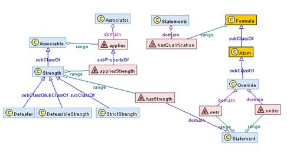
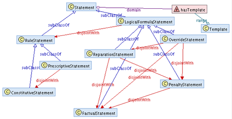
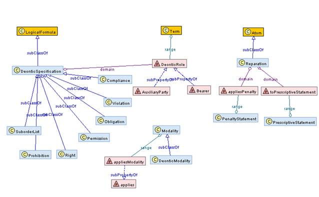
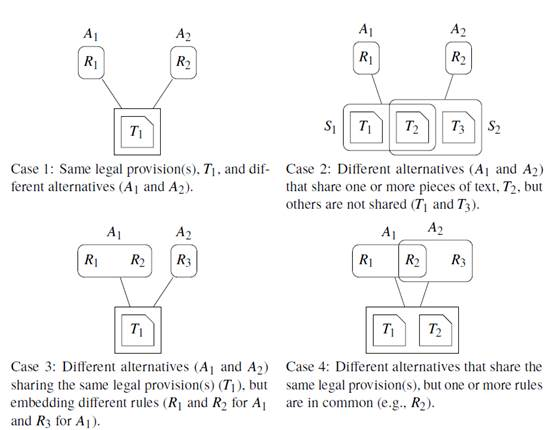
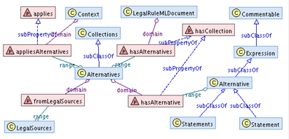
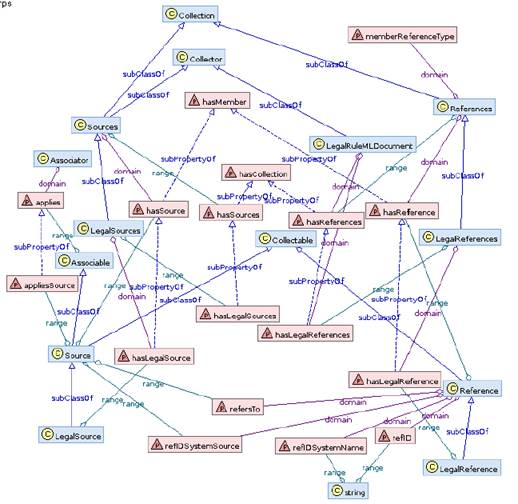
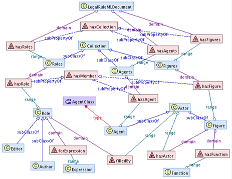
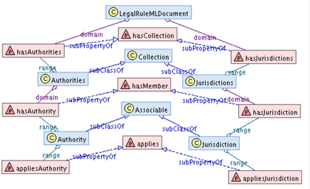
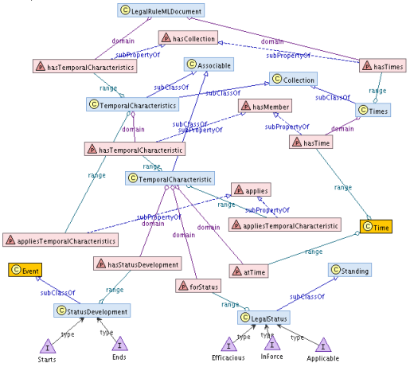
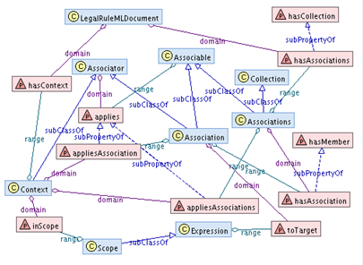

This specification is provided under the RF
on Limited Terms Mode of the OASIS IPR Policy,
the mode chosen when the Technical Committee was established.
For information on whether any patents have been disclosed
that may be essential to implementing this specification, and any offers of
patent licensing terms, please refer to the Intellectual Property Rights
section of the TC’s web page (https://www.oasis-open.org/committees/legalruleml/ipr.php).
The key words “MUST”, “MUST NOT”, “REQUIRED”, “SHALL”,
“SHALL NOT”, “SHOULD”, “SHOULD NOT”, “RECOMMENDED”, “MAY”, and “OPTIONAL” in
this document are to be interpreted as described in [RFC2119].
[RFC2119] S.
Bradner, Key words for use in RFCs to Indicate Requirement Levels, http://www.ietf.org/rfc/rfc2119.txt,
IETF RFC 2119, March 1997.
[RDF] RDF 1.1 Primer, G. Schreiber, Y.
Raimond, Editors, W3C Working Group Note, 17 March 2015, http://www.w3.org/TR/2015/NOTE-rdfa-primer-20150317/.
Latest version available at http://www.w3.org/TR/rdfa-primer/
[RDFS] RDF Vocabulary Description
Language 1.0: RDF Schema , D. Brickley, R. V. Guha, Editors, W3C
Recommendation, 10 February 2004,
http://www.w3.org/TR/2004/REC-rdf-schema-20040210/ . Latest version available
at http://www.w3.org/TR/rdf-schema/
[RNG] [RNG] ISO/IEC 19757-2 Document
Schema Definition Language (DSDL) -- Part 2: Regular-grammar-based validation
-- RELAX NG, International Organization for Standardization and International
Electrotechnical Commission, 2003
[XSD] XML Schema Part 0: Primer Second
Edition, W3C Recommendation 28 October 2004 http://www.w3.org/TR/xmlschema-0/
[XML] Extensible Markup Language (XML)
1.0 (Fifth Edition) , T. Bray, J. Paoli, M. , E. Maler, F. Yergeau, Editors,
W3C Recommendation, 26 November 2008,
http://www.w3.org/TR/2008/REC-xml-20081126/ . Latest version available at http://www.w3.org/TR/xml
[XML namespace] http://www.w3.org/XML/1998/namespace
[RFC3987] Duerst, M. and M. Suignard,
"Internationalized Resource Identifiers (IRIs)", RFC 3987, DOI
10.17487/RFC3987, January 2005, http://www.rfc-editor.org/info/rfc3987
[CURI] RDFa in XHTML: Syntax and
Processing , B. Adida, M. Birbeck, S. McCarron, S. Pemberton, Editors, W3C
Recommendation, 14 October 2008,
http://www.w3.org/TR/2008/REC-rdfa-syntax-20081014 . Latest version available
at http://www.w3.org/TR/rdfa-syntax . (6. CURIE Syntax Definition)
[FRBR] IFLA Study
Group on the Functional Requirements for Bibliographic Records (Ed.) and
Standing Committee of the IFLA Section on Cataloguing. 2013. Functional Requirements
for Bibliographic Records. Final Report. Berlin, Boston: K. G. Saur. Retrieved
11 Mar. 2017, from http://www.degruyter.com/view/product/53101
[ConsumerRuleML] Consumer RuleML Specification 1.02. http://wiki.ruleml.org/index.php/Specification_of_Consumer_RuleML_1.02
[RuleML] RuleML
Specification 1.02
http://wiki.ruleml.org/index.php/Specification_of_RuleML_1.02
[Reaction RuleML] Reaction RuleML
Specification 1.02 http://wiki.ruleml.org/index.php/Specification_of_Reaction_RuleML_1.02
Preformatted type, e.g. Agent, is used for the names of XML
components (elements and attributes) and IRIs.
Namespaces are used in
this document for qualified names in XML as following:
·
xmlns for http://www.w3.org/XML/1998/namespace.
·
xmlns:lrml for http://docs.oasis-open.org/legalruleml/ns/v1.0/
·
xmlns:lmrlmm for http://docs.oasis-open.org/legalruleml/ns/mm/v1.0/
·
xmlns:ruleml for http://ruleml.org/spec
·
xmlns:xsi for http://www.w3.org/2001/XMLSchema-instance
·
xmlns:xs for http://www.w3.org/2001/XMLSchema
The corresponding prefix (e.g., lrml, lmrlmm, ruleml, xsi,
xs) for abbreviating IRIs.
The following formatting conventions are used to distinguish
the occurrence of LegalRuleML terms within the document:
1. When an occurrence of a term refers to an element or
attribute, the term appears in preformatted type, with no spaces and XML markup
(e.g. <lrml:LegalSource> and @hasMemberType).
2. When it refers to a concept, it appears with spaces (if
appropriate) and no preformatted type (e.g. Constitutive Statement, Deontic
Specification).
3. When both readings are possible, it appears with no
spaces, no preformatted type, and no XML markup (e.g. ConstitutiveStatement).
Capitalization is used to distinguish certain terms and
names. UpperCamelCase is used for:
a) Node elements
e.g. <lrml:ConstitutiveStatement>, <lrml:LegalSource>;
b) their associated
concepts, e.g. Constitutive Statement, and;
c) their
type, as a metamodel IRI, e.g. lrmlmm:ConstitutiveStatement.
Similarly, lowerCamelCase is used for:
d) edge elements
and attributes e.g., <lrml:hasStatement>,
@memberType;
e) and their
associated role, as a metamodel IRI, e.g. lrmlmm:hasStatement,
lrmlmm:memberType.
Italic is used in the angle brecket for distinguishing the
annotation to the XML syntax when it is necessary to underline the presence of
a generic XML element.
In examples in the
presentation syntax, we use a particular annotation:
·
variables are prefixed with $ (e.g., $income);
·
constants are prefixed with % (e.g., %employer).
In the documents we use
the following acronyms associated with the given references.
RDF: Resource Description Framework as defined in [RDF].
RDFS: RDF Schema as defined in [RDFS].
XML: eXtensible Markup Language as defined in [XML].
FRBR: Functional Requirements for Bibliographic Records as defined
in [FRBR].
All text is normative unless labeled as non-normative.
Legal texts, e.g. legislation, regulations, contracts, and
case law, are the source of norms, guidelines, and rules. As text, it is
difficult to exchange specific information content contained in the texts
between parties, to search for and extract structured the content from the
texts, or to automatically process it further. Legislators, legal
practitioners, and business managers are, therefore, impeded from comparing, contrasting,
integrating, and reusing the contents of the texts, since any such activities
are manual. In the current web-enabled context, where innovative eGovernment
and eCommerce applications are increasingly deployed, it has become essential
to provide machine-readable forms (generally in XML) of the contents of the
text. In providing such forms, the general norms and specific procedural rules
in legislative documents, the conditions of services and business rules in
contracts, and the information about arguments and interpretation of norms in
the judgments for case-law would be amenable to such applications.
The ability to have proper and expressive conceptual,
machine-readable models of the various and multifaceted aspects of norms,
guidelines, and general legal knowledge is a key factor for the development and
deployment of successful applications. The LegalRuleML TC, set up inside of
OASIS (www.oasis-open.org), aims to produce a rule interchange language for the
legal domain. Using the representation tools, the contents of the legal texts
can be structured in a machine-readable format, which then feeds further
processes of interchange, comparison, evaluation, and reasoning. The Artificial
Intelligence (AI) and Law communities have converged in the last twenty years
on modeling legal norms and guidelines using logic and other formal techniques
[6]. Existing methods begin with the analysis of a legal text by a Legal
Knowledge Engineer, who scopes the analysis, extracts the norms and guidelines,
applies models and a theory within a logical framework, and finally represents
the norms using a particular formalism. In the last decade, several Legal XML
standards have been proposed to represent legal texts [30]
with XML-based rules (RuleML, SWRL, RIF, LKIF, etc.) [16,
18]. At the same time, the Semantic Web, in particular Legal Ontology research
combined with semantic norm extraction based on Natural Language Processing (NLP)
[15],
has given a strong impetus to the modeling of legal concepts [8,
10, 11]. Based on this, the work of the LegalRuleML
Technical Committee will focus on three specific needs:
1
To close the gap between legal texts, which are expressed in
natural language, and semantic norm modeling. This is necessary in order to
provide integrated and self-contained representations of legal resources that
can be made available on the Web as XML representations [32] and so foster
Semantic Web technologies such as: NLP, Information Retrieval and Extraction
(IR/IE), graphical representation, as well as Web ontologies and rules.
2
To provide an expressive XML standard for modeling normative
rules that satisfies legal domain requirements. This will enable use of a legal
reasoning layer on top of the ontological layer, aligning with the W3C
envisioned Semantic Web stack.
3
To apply the Linked Open Data [9]
approach to model raw data in the law (acts, contracts, court files, judgments,
etc.) and to extend it to legal concepts and rules along with their
functionality and usage. Without rules that apply to legal concepts, legal
concepts constitute just a taxonomy [36].
The objective of the LegalRuleML
TC is to extend RuleML with formal features specific to legal norms,
guidelines, policies and reasoning; that is, the TC defines a standard
(expressed with XML-schema and Relax NG) that is able to represent the
particularities of the legal normative rules with a rich, articulated, and
meaningful markup language.
LegalRuleML models:
- defeasibility of rules and defeasible logic;
- deontic operators (e.g., obligations, permissions,
prohibitions, rights);
- semantic management of negation;
- temporal management of rules and temporality in rules;
- classification of norms (i.e., constitutive, prescriptive);
- jurisdiction of norms;
- isomorphism between rules and natural language normative
provisions;
- identification of parts of the norms (e.g. bearer,
conditions);
- authorial tracking of rules.
Some matters are out of the scope of the TC and LegalRuleML
such as specifications of core or domain legal ontologies.
The main principles of LegalRuleML are as follows.
Multiple Semantic Annotations: A legal rule may have
multiple semantic annotations, where these annotations represent different
legal interpretations. Each such annotation appears in a separate annotation
block as internal or external metadata. Interpretations are provided with
parameters that indicate provenance, applicable jurisdiction, logical
interpretation of the rule, and others.
Tracking the LegalRuleML Creators: As part of the
provenance information, a LegalRuleML document or any of its fragments can be
associated with its creators. This is important to establish the authority and
trust of the knowledge base and annotations. The creators of the document can
be the authors of the text, knowledge base, and annotations, as well as the
publisher of the document.
Linking Rules and Provisions: LegalRuleML includes a
mechanism, based on IRI, that allows many to many (N:M) relationships among the
rules and the textual provisions: multiple rules are embedded in the same
provision, several provisions contribute to the same rule. This mechanism may
be managed in the metadata block, permitting extensible management, avoiding
redundancy in the IRI definition, and avoiding errors in the associations.
Temporal Management: LegalRuleML's universe of
discourse contains a variety of entities: provisions, rules, applications of
rules, references to text, and references to physical entities. All of these
entities exist and change in time; their histories interact in complicated
ways. LegalRuleML represents these temporal issues in an unambiguous fashion.
In particular, a rule has parameters that can vary over time, such as its
status (e.g. strict, defeasible, defeater), its validity (e.g. repealed,
annulled, suspended), and its jurisdiction (e.g. only in the EU, only in the
US). In addition, a rule has temporal aspects such as internal constituency of
the action, the time of assertion of the rule, the efficacy, enforcement, and
so on.
Formal Ontology Reference: LegalRuleML is independent
from any legal ontology and logic framework. However, it includes a mechanism,
based on IRIs, for pointing to reusable classes of a specified external
ontology or framework.
LegalRuleML is based on RuleML: LegalRuleML reuses
and extends the concepts and syntax of RuleML wherever possible, and it also
adds novel annotations. RuleML includes Reaction RuleML.
Mapping: LegalRuleML is mappable to RDF triples for
Linked Data reuse.
The syntax design should follow from semantic intuitions
from the subject matter domain - labeling entities, properties, and relations
as well as some of the type constraints amongst them that guide how the labels
are combined and used.
Criteria of Good Language Design are:
·
Minimality, which requires that the language provides only a
small set of needed language constructs, i.e., the same meaning cannot be expressed
by different language constructs.
·
Referential transparency, which means that the same language
construct always expresses the same semantics regardless of the context in
which it is used.
·
Orthogonality, which means that language constructs are independent
of each other, thus permitting their systematic combination.
LegalRuleML follows pattern-based design, where design patterns are
a distillation of common wisdom in organizing the structural parts, the grammar
and the constraints of a language. Some of them are listed in [11] and as XML Patterns[1]. Inside of LegalRuleML we introduce five design patterns.
LegalRuleML was designed based on the above principles. In particular,
its vocabulary is inspired by terms from the legal domain, which then
facilitates their use by users familiar with that domain. Also, the LegalRuleML
meta-model captures the common meaning of such terms as understood in the legal
field. In what follows we illustrate the connections among the various concepts
and their representation in the language.
This chapter defines the terminology for the internal
documentation of LegalRuleML XML-schema and connected modules as well as
general concepts used in the narrative about LegalRuleML. Those terms that are
embedded in the XML-schema appear under Node Elements, while those used as well
in the narrative are indicated with +. Terminology that is being defined
appears on the left, while terminology that has been defined elsewhere appears
with an initial capital letter.
These definitions are duplicated in the Relax NG and XSD
schemas and the RDFS metamodel. In the case of discrepancy, the definition in
the Vocabulary section takes precedence.
The vocabulary is non-normative per-se, but it is determined
by the normative part of the schemas.
Actor: an Agent or a Figure.
Deontic Specification: An indication of what states are legal
or illegal. Deontic Specifications include Obligation, Permission, Prohibition,
SuborderList, etc., or a Boolean combination of Deontic Specifications other
than SuborderLists (at any depth).
Internal Identifier: a local unique identifier of a node in
a LegalRuleML document.
Isomorphism: a relationship between a set of Legal Rules
with a set of Legal Sources such that the origin of the Legal Rules is tied to
the Legal Sources.
Legal Norm: a binding directive from a Legal Authority to
addressees (i.e. Bearers or Auxiliary Parties).
Legal Rule: a formal representation of a Legal Norm.
LegalRuleML Specification: an XML schema, Relax NG schema,
metamodel, glossary, license, or any other technical normative specification
that is an approved outcome of this OASIS TC.
LegalRuleML Schema: one of the following
Legal Statement: a LegalRuleML expression of a Legal Rule or
a part of a Legal Rule.
Legal Status: a standing that can apply to a Legal Norm at a
Time, e.g., "is applicable", "is in force", "has
efficacy", "is valid".Status Development: a kind of event (e.g.,
start, end) that changes the Legal Status of a Legal Norm, e.g. making a Legal
Norm come into force.
LegalRuleML Profile of Consumer RuleML 1.02: it means the
derivative work of Consumer RuleML 1.02 for the purpose of LegalRuleML
Specification.
The LegalRuleML namespace is http://docs.oasis-open.org/legalruleml/ns/v1.0/.
The LegalRuleML metamodel namespace is http://docs.oasis-open.org/legalruleml/ns/mm/v1.0/
Other namespaces used in LegalRuleML documents
are:
Agent(s)+: an entity that acts or has the capability to act.
Alternatives +: a mutually exclusive collection where every
member is a LegalRuleML rendering of one or more Legal Norms.
Association(s): a partial description of the extension of
some relations where each non-target entity is paired with every target entity.
Authority(ies) +: a person or organization with the power to
create, endorse, or enforce Legal Norms.
AuxiliaryParty +: a role in a Deontic Specification to which
the Deontic Specification is related.
Bearer +: a role in a Deontic Specification to which the
Deontic Specification is primarily directed.
Comment: a comment, which has no semantic effect.
Compliance +: an indication that an Obligation has been
fulfilled or a Prohibition has not been violated.
ConstitutiveStatement +: a Legal Statement that defines
concepts and does not prescribe behaviors.
Context +: an application of Associations to their target
entities within a Scope.
DefeasibleStrength +: an indication that, in the absence of
information to the contrary and where the antecedent of a Legal Rule holds, the
conclusion of the Legal Rule holds.
Defeater +: an indication that, in the absence of
information to the contrary and where the antecedent of a Legal Rule holds, the
opposite of the conclusion of the Legal Rule does not hold.
FactualStatement +: an expression of fact.
Figure(s) +: an instantiation of a function by an Actor.
Jurisdiction(s) +: a geographic area or subject-matter over
which an Authority applies its legal power.
LegalRuleML: a formal representation of one or more LegalSources
using the LegalRuleML Specifications.
LegalSource(s) +: a source of one or more Legal Norms
formulated in any format and endorsed by an Authority.
Obligation +: a Deontic Specification for a state, an act,
or a course of action to which a Bearer is legally bound, and which, if it is
not achieved or performed, results in a Violation.
Override +: an indication that a Legal Rule takes precedence
over another Legal Rule. The ordered pair of Legal Rules is an instance in a
defeasible priority relation.
OverrideStatement +: a Legal Statement of an Override.
Paraphrase +: a natural language rendering of a Legal Rule
or fragment of it that is an alternative to its Legal Source(s).
PenaltyStatement +: a Legal Statement of a sanction (e.g. a
punishment or a correction).
Permission (see also Right) +: a Deontic Specification for a
state, an act, or a course of action where the Bearer has no Obligation or
Prohibition to the contrary. A weak Permission is the absence of the Obligation
or Prohibition to the contrary; a strong Permission is an exception or
derogation of the Obligation or Prohibition to the contrary.
Prefix +: a prefix declaration in a LegalRuleML document.
PrescriptiveStatement +: a Legal Statement which prescribes
behaviors, e.g. with Permissions, Obligations, or Prohibitions on states,
actions, or courses of actions.
Prohibition +: a Deontic Specification for a state, an act,
or a course of action to which a Bearer is legally bound, and which, if it is
achieved or performed, results in a Violation.
Reference(s) +: a pair consisting of an internal ID and an
enriched non-IRI identifier, where the non-IRI is paired with some additional
information that is sufficient to disambiguate the non-IRI to a unique
LegalSource.
Reparation +: an indication that a PenaltyStatement is
linked with a PrescriptiveStatement. It indicates that a sanction may apply
where the PrescriptiveStatement entails a Deontic Specification and when there
is a Violation of the Deontic Specification.
ReparationStatement: a Legal Statement of a Reparation.
Right (see also Permission) +: a Deontic Specification that
gives a Permission to a party (the Bearer) and implies there are Obligations or
Prohibitions on other parties (the AuxiliaryParty) such that the Bearer can
(eventually) exercise the Right.
Role(s) +: a function of or part played by an Actor relative
to a LegalRuleML expression.
Source(s)+: a source of information formulated in any
format.
Statements +: a collection where every member is a Legal
Statement or a FactualStatement.
Strength: the quality of a Legal Rule to resist or not to
resist a rebuttal.
StrictStrength +: an indication that where the antecedent
of a Legal Rule is indisputable, the conclusion of the Legal Rule is
indisputable.
SuborderList: A Deontic Specification consisting of a
sequence of Deontic Specifications other than SuborderLists (at any depth).
When a SuborderList holds, a Deontic Specification in the SuborderList holds if
all Deontic Specifications that precede it in the SuborderList have been
violated.
TemporalCharacteristic(s) +: a pair of Time with a
qualification, which consists of a Legal Status and a Status Development, such
that the qualification holds at the Time.
Time(s) +: a collection where each member is a Time.
Violation +: an indication that an Obligation or Prohibition
has been violated.
ruleml:Rule:
a) a RuleML Rule encoding a Constitutive
Statement.
b) a RuleML Rule encoding a Prescriptive
Statement.
ruleml:Time +: a neutral
temporal entity.
For nodes with the plural, i.e., <Node>(s)
the node <Nodes> is defined as a
collection where every member is a <Node>.
The plural form is not a General Concept.
applies<Node>
: a <Node> applied by the Context or Association
(e.g. appliesAuthority – an Authority applied by the Context or Association).
appliesAlternatives:
a collection of Alternatives applied by the Context.
appliesAssociations:
a collection of Associations applied by the Context.
appliesAssociation:
an Association applied by the Context.
appliesAuthority:
an Authority applied by the Context or Association.
appliesJurisdiction:
a Jurisdiction applied by the Context or Association.
appliesStrength:
a Strength applied by the Context or Association.
appliesTemporalCharacteristics:
a collection of TemporalCharacteristics
applied by the Context or Association.
appliesTemporalCharacteristic:
a TemporalCharacteristic applied by the Context or Association.
appliesModality:
the deontic mode that applies to a Deontic Specification in a Context or Association.
appliesPenalty:
the PenaltyStatement that is linked to a
LegalRule in a Reparation.
appliesSource:
a LegalSource or Reference
applied by the Context or Association.
atTime: the Time of the qualification of a TemporalCharacteristic.
filledBy: an Actor that fills the Role.
forExpression: a
LegalRuleML expression for which the Role is
responsible (e.g., the expression was created or endorsed by the role).
forStatus: the Legal
Status of the qualification in a TemporalCharacteristic.
fromLegalSources: the LegalSources from which the Alternatives are
derived.
has<Node>:
a <Node> in the collection
(e.g. hasAgent – an Agent in the collection).
hasAlternative:
an Alternative in the collection.
hasAgent: an Agent in the collection.
hasAssociation:
an Association in the collection.
hasAuthority:
an Authority in the collection.
hasFigure: a Figure in the collection.
hasJurisdiction:
a Jurisdiction in the collection.
hasLegalSource:
a LegalSource in the collection.
hasReference:
a Reference in the collection.
hasRole: a Role in the collection.
hasStatement:
a Legal Statement in the collection.
hasTemporalCharacteristic:
a TemporalCharacteristic in the collection.
hasTime: a Time in the collection.
has<Node>s: a
collection of <node>s (e.g. hasAgents – a collection of Agents).
hasAgents: a
collection of Agents.
hasAlternatives:
a collection of Alternatives.
hasAssociations:
a collection of Associations.
hasAuthorities:
a collection of Authorities.
hasFigures: a
collection of Figures.
hasJurisdictions:
a collection of Jurisdictions.
hasLegalSources:
a collection of LegalSources.
hasReferences:
a collection of References.
hasRoles: a
collection of Roles.
hasStatements:
a collection of Legal Statements.
hasTemporalCharacteristics:
a collection of TemporalCharacteristics.
hasTimes: a
collection of Times.
hasActor: an Actor that has the responsibility to fulfill the
function of a Figure.
hasContext: a Context described in the LegalRuleML document.
hasComment: a Comment on the parent Node Element.
hasFunction: the function
of a Figure.
hasParaphrase: a Paraphrase of the parent Node Element (e.g. a Legal
Rule).
hasPrefix: a Prefix
declared in the LegalRuleML document.
hasQualification: a
qualification (e.g. an Override) of the
Statements.
hasStatusDevelopment: the
Status Development of the qualification in a TemporalCharacteristic.
hasStrength: the Strength of the Legal Rule.
hasTemplate: the template
of a Legal Statement.
inScope: the Statement or
(collection of) Statements that the Context
is applied to.
hasMemberType: the type or
class of members of the collection.
toPrescriptiveStatement:
the PrescriptiveStatement that is linked to a
PenaltyStatement in a Reparation.
toTarget: the target to
which properties are applied by the Association.
hasType: the type or class
of the parent Node Element.
@hasCreationDate: the
creation date of the Context or LegalRuleML
document.
@iri: an IRI providing
details regarding the parent Node Element.
@key: a
Node Element label.
@keyref:
a Node Element reference.
@memberType: the type or class
of members of the collection.
@over: the Legal Rule with
higher priority.
@pre: the prefix in a
Prefix declaration, following CURIE conventions.
@refersTo: the internal ID
of the Reference.
@refID: the external ID of
the Reference.
@refIDSystemName: the name
of the ID system of the Reference (or of
References contained by the References collection).
@refIDSystemSource: the
IRI source of the ID system of the Reference
(or of References contained by the References collection).
@refType: the conceptual type
of the Reference (or of references contained
by the References collection).
@sameAs: an IRI that
denotes the same thing as the parent Node Element.
@strength: the
(defeasible) Strength of the Legal Rule.
@type: the type or class
of the parent Node Element.
@under: the Legal Rule
with lower priority.
In the LegalRuleML normalized serialization, the children of
Node elements can only be edge elements. An edge element MAY be empty (called a
leaf element) or it MAY contain one Node element. Together, these requirements
give rise to a "striped" syntax.
In the LegalRuleML compact serialization, the only edge elements in the
LegalRuleML namespace that are allowed are leaf edge elements. To obtain the
compact serialization from a normalized serialization of a LegalRuleML
document, first delete the tags for any LegalRuleML edge elements that have
children.
Further, in the LegalRuleML compact serialization, the
elements in the RuleML namespace MUST also be "compactified". To
accomplish this, delete the tags of the following skippable edge elements in
the RuleML namespace:
ruleml:arg
ruleml:op
ruleml:torso
ruleml:left
ruleml:right
ruleml:formula
ruleml:declare
ruleml:weak
ruleml:strong
The LegalRuleML
metamodel captures the common meaning of domain terms as understood in the
legal field, formalizes the connections among the various concepts and their
representation in the language, and provides an RDF-based abstract syntax. RDFS
(see Annex C) is used to define the LegalRuleML metamodel, and graphs of the
RDFS schemas accompany the following discussions about the domain concepts. http://wiki.ruleml.org/index.php/Metamodel
The LegalRuleML metamodel uses placeholder
IRIs to stand in for components of the RuleML metamodel [RuleMLMetamodel], which is under
development at the time of publication of this document.
Specifically, LegalRuleML facilitates the
following functionalities.
·
R1) Supports modeling
different types of rules. There are constitutive rules, which define concepts or
institutional actions that are recognized as such by virtue of the defining
rules (e.g. the legal definition of “transfer property ownership”) and there
are prescriptive rules, which
regulated actions or the outcome of actions by making them obligatory,
permitted, or prohibited.
·
R2) Represents normative effects. There are many
normative effects that follow from applying rules, such as obligations,
permissions, prohibitions, and more articulated effects. Rules are also
required to regulate methods for detecting violations of the law and to
determine the normative effects triggered by norm violations, such as
reparative obligations, which are meant to repair or compensate violations.
These constructions can give rise to very complex rule dependencies, because
the violation of a single rule can activate other (reparative) rules, which in
turn, in case of their violation, refer to other rules, and so forth.
·
R3) Implements
defeasibility [17,
33, 37]. In the law, where the antecedent of a rule is
satisfied by the facts of a case (or via other rules), the conclusion of the
rule presumably, but not necessarily, holds. The defeasibility of legal rules
consists of the means to identify exceptions and conflicts along with
mechanisms to resolve conflicts.
·
R4) Implements
isomorphism [7]. To ease validation and maintenance, there should be a one-to-one
correspondence between collections of rules in the formal model and the units
of (controlled) natural language text that express the rules in the original
legal sources, such as sections of legislation.
·
R5) Represents alternatives. Often legal
documents are left ambiguous on purpose to capture open ended aspects of the
domain they are intended to regulate. At the same time legal documents are
meant to be interpreted by end users. This means that there are cases where
multiple (and incompatible) interpretations of the same textual source are
possible. LegalRuleML offers mechanisms to specify such interpretations and to
select one of them based on the relevant context.
·
R6) Manages rule
reification [17]. Rules are objects with properties, such as Jurisdiction,
Authority, Temporal attributes [26,
32]. These elements are necessary to enable effective legal
reasoning.
According to scholars of legal theory [36],
norms can be represented by rules with the form
where A_1,...,A_n are the pre-conditions of the norm, C is the effect of the
norm, and if ... then ... is a normative conditional, which are generally defeasible and do
not correspond to the if-then material implication of propositional logic. Norms
are meant to provide general principles, but at the same time they can express
exceptions to the principle. It is well understood in
Legal Theory [18,
37] that, typically, there are different types of “normative conditionals”, but
in general normative conditionals are defeasible. Defeasibility is the property
that a conclusion is open in principle to revision in case more evidence to the
contrary is provided. Defeasible reasoning is in contrast to monotonic
reasoning of propositional logic, where no revision is possible. In addition,
defeasible reasoning allows reasoning in the face of contradictions, which
gives rise to ex
false quodlibet in propositional logic. One application of
defeasible reasoning is the ability to model exceptions in a simple and natural
way.
The first use of defeasible rules is to
capture conflicting rules/norms without making the resulting set of rules
inconsistent. Given that -expression means the
negation of expression, the following two rules conclude with the negation of
each other
body_1 => head
body_2 => -head
Without defeasibile rules, rules with
conclusions that are negations of each other could give rise, should body 1 and
body 2 both hold, to a contradiction, i.e., head and -head, and consequently ex falso quodlibet. Instead, defeasible reasoning is sceptical; that is, in case of a
conflict such as the above, it refrains from taking any of the two conclusions,
unless there are mechanisms to solve the conflict (see the discussion below on
the superiority relation). We can apply this to model exceptions. Exceptions
limit the applicability of basic norms/rules, for example:
body => head
body, exception_condition => -head
In this case, the second rule is more
specific than the first, and thus it forms an exception to the first, i.e., a
case where the rule has extra conditions that encode the exception, blocking
the conclusion of the first rule. Often, exceptions in defeasible reasoning can
be simply encoded as
body => head
exception_condition => -head
In the definition of rules as normative
conditionals made up of preconditions and effect, we can see a rule as a binary
relationship between the set of pre-conditions (or body or antecedent) of the
rule, and the (legal) effect (head or conclusion) of the rule. Formally, a rule
can be defined by the following signature:
We can then investigate the nature of such
a relationship. Given two sets, we have the following seven possible
relationships describing the “strength” of the connections between the body and
the head of a rule:
body always head
body sometimes head
body not complement head
body no relationship head
body always complement head
body sometimes complement head
body not head
In defeasible logic we can represent the
relationships using the following formalisation of rules (rule types):
body -> head
body => head
body ~> head
body -> -head
body => -head
body ~> -head
The seventh case is when there are no rules
between the body and the head. The following table summarizes the
relationships, the notation used for them, and the strength of the
relationship.
|
|
|
|
|
|
|
|
|
|
|
|
body no relationship head
|
|
|
body always complement head
|
|
|
body sometimes complement head
|
|
|
|
|
|
|
The meaning of the different types of rules
is as follows:
For a strict
rule body -> head the interpretation is that every time the body
holds then the head holds.
For a defeasible rule
body => head the reading is when the body
holds, then, typically, the head holds. Alternatively, we can say that the head
holds when the body does unless there are reasons to assert that the head does
not hold. This captures that it is possible to have exceptions to the
rule/norm, and it is possible to have prescriptions for the opposite
conclusion.
For a defeaters body ~> head the intuition is as follows:
defeaters are rules that cannot establish that the head holds. Instead they can
be used to specify that the opposite conclusion does not hold. In argumentation
two types of defeaters are recognized: defeaters used when an argument attacks
the preconditions of another argument (or rule); other defeaters used when
there is no relationship between the premises of an argument (preconditions of
a rule or body) and the conclusion of the argument (effect of the rule or
head).
It is possible to have conflicting rules,
i.e., rules with opposite or contradictory heads, for example
body1 => head
body2 => -head
Systems for defeasible reasoning
include mechanisms to solve such conflicts. Different methods to solve
conflicts have been proposed: specificity,
salience,
and preference
relation. According to specificity, in case of a conflict between
two rules, the most specific rule prevails over the less specific one, where a
rule is more specific if its body subsumes the body of the other rule. For
salience, each rule has an attached salience or weight, where in case of a
conflict between two rules, the one with the greatest salience or weight
prevails over the other. Finally, a preference relation (also known as
superiority relation) defines a binary relation over rules, where an element of
the relation states the relative strength between two rules. Thus, in case of a
conflict between two rules, if the preference relation is defined order such
rules, the strongest of the two rules wins over the other.
Various researchers have taken
different views on such methods. Specificity corresponds to the well know legal
principle of lex
specialis. Prakken and Sartor [34]
argue that specificity is not always
appropriate for legal reasoning and that there are other well understood legal
principles such as lex
superior and
lex posterior apply instead. Prakken and
Sartor [34]
cite cases in which the lex
specialis principle
might not be the one used to solve the conflict, for example, a more specific
article from a local council regulation might not override a less specific
constitutional norm. Prakken and Sartor [34]
propose a dynamic preference relation to handle conflicting rules. The preference
relation is dynamic in the sense that it is possible to argue about which
instances of the relation hold and under which circumstances. Antoniou [2]
proposes that instances of the superiority relation appear in the head of
rules, namely:
where superiority is a statement with the form
where r1 and r2 are rule identifiers.
Gordon et al. [19] propose Carneades as a rule-based argumentation system suitable for
legal reasoning, where they use weights attached to the arguments (rules) to
solve conflicts and to define proof standards. Governatori [21] shows how to use the weights to generate an equivalent preference
relation, and, consequently, how to capture the proposed proof standards. In
addition, Governatori [21] shows that there are situations where a preference relation cannot
be captured by using weights on the rules.
To handle defeasibility, LegalRuleML has to
capture the superiority relation and the strength of rules. For the superiority
relation, LegalRuleML offers the element <lrml:Override>,
which defines a relationship of superiority where cs2 overrides cs1, where cs2 and cs1 are Legal Statement (see the
glossary definition) identifiers. These elements are
included in <lrml:hasTemplate> element in the Normal form (all the Normal
form examples are collected in the Annex F) and in the <lrml:OverrideStatement> element in the Compact form. Example 1 (compact form)[3]:
<lrml:OverrideStatement>
<lrml:Override
over="#cs2" under="#cs1"/>
</lrml:OverrideStatement>
For the representation of the strength of
rules, LegalRuleML offers two options. The first is to include it in a <lrml:Context> block, where a <lrml:Context> specifies a context in which
the rule is applied.
Example 2 (compact form)[4]:
<lrml:Prefix pre="defvo"
refID="http://example.org/defeasible/vocab#"/>
<lrml:Context key="ruleInfo2">
<lrml:appliesStrength
iri="defvo:defeasibleType2"/>
<lrml:inScopekey
ref="#cs1"/>
</lrml:Context>
The second (and
optional) way to express the qualification of the rule is directly inside of
the rule with an <lrml:hasStrength> block. The
difference is that <lrml:Context>
localizes the strength of a rule, while the <lrml:hasStrength>
block in effect relates the strength to the rule in all contexts.
Example 3 (compact form)[5]:
<ruleml:Rule key=":ruletemplate3"
keyref=":ruletemplate2">
<lrml:hasStrength>
<lrml:Defeater
key="str4"/>
</lrml:hasStrength>
</ruleml:Rule>

Fig. 1. Partial Metamodel for Defeasible Concepts. LegalRuleML
classes are shown with blue fill,
LegalRuleML properties with pink fill, RuleML classes
with orange fill.
As we have discussed, a Legal Rule can be seen as a binary
relationship between its antecedent (a set of formulas, encoding the
pre-conditions of a norm, represented in LegalRuleML by a formula, where
multiple pre-conditions are joined by some logical connective) and its
conclusion (the effect of the norm, represented by a formula). It is possible
to have different types of relations. In the previous section, we examined one
such aspect: the strength of the link between the antecedent and the
conclusion. Similarly, we can explore a second aspect, namely what type of effect
follows from the pre-condition of a norm. In Legal Theory
norms are classified mostly in two main categories: constitutive norms
and prescriptive norms,
which will be then represented as constitutive rules (also known
as counts-as
rules) and prescriptive rules.
The function of constitutive norms is to
define and create so called institutional facts [39], where an institutional fact is how a particular concept is
understood in a specific institution. Thus, constitutive rules provide
definitions of the terms and concepts used in a jurisdiction. On the other
hand, prescriptive rules dictate the obligations, prohibitions, permissions,
etc. of a legal system, along with the conditions under which the obligations,
prohibitions, permissions, etc. hold. LegalRuleML uses deontic operators to
capture such notions (see Section 4.2.3). Deontic operators are meant to
qualify formulas. A Deontic operator takes as its argument a formula and
returns a formula. For example, given the (atomic) formula PayInvoice(guido), meaning ‘Guido
pays the invoice’, and the deontic operator [OBL]
(for obligation), the application of the deontic
operator to the formula generates the new formula [OBL]PayInvoice(guido), meaning
that “it is obligatory that Guido pays the invoice”.
The following is the LegalRuleML format for
prescriptive rules. Notice, that in LegalRuleML Legal rules are captured by the
broader class of Statements.
Example 4 (compact form)[7]:
<lrml:Statements>
<lrml:PrescriptiveStatement
key="ps1">
<ruleml:Rule
key="ex:key1">
<lrml:hasStrength>
<lrml:StrictStrength key="str3"
iri="http://www.w3.org/2001/XMLSchema#strict1"/>
</lrml:hasStrength>
<ruleml:if>
<ruleml:Atom
key=":atom1">
</ruleml:Atom>
set of deontic formulas and formulas
</ruleml:if>
<ruleml:then>
<lrml:SuborderList>
list of deontic formulas
</lrml:SuborderList>
</ruleml:then>
</ruleml:Rule>
</lrml:PrescriptiveStatement>
</lrml:Statements>
The difference between constitutive rules
and prescriptive rules is in the content of the head, where the head of a
prescriptive rule is list of deontic operators, i.e., [D1]formula1,...,[Dn]formulan which is called a suborder list (see
Section 4.2.3.2 below), and represented in LegalRuleML by the <lrml:SuborderList> block. Prescriptive and
constitutive rules can have deontic formulas as their preconditions (body). The
conclusion (head) of a constitutive rule cannot be a deontic formula.
Example 5 (compact form)[8]:
<lrml:Statements>
<lrml:ConstitutiveStatement
key="ps1">
<ruleml:Rule
key="ruleml:key1">
<lrml:hasStrength>
<lrml:DefeasibleStrength
key="str1" iri="http://www.w3.org/2001/XMLSchema#defeasible1"/>
</lrml:hasStrength>
<ruleml:if>
<ruleml:Atom
key=":atom1">
</ruleml:Atom>
set of deontic formulas and formulas
</ruleml:if>
<ruleml:then>
<ruleml:Atom
key=":atom1">
</ruleml:Atom>
set of deontic formulas and formulas
</ruleml:then>
</ruleml:Rule>
</lrml:ConstitutiveStatement>
</lrml:Statements>

Fig. 2. Partial
Metamodel for Statement Subclasses.
The partial meta-model for Statement Subclasses is depicted
in Figure 2.
One of the functions of norms is
to regulate the behavior of their subjects by imposing constraints on what the
subjects can or cannot do, what situations are deemed legal, and which ones are
considered to be illegal. There is an important difference between the
constraints imposed by norms and other types of constraints. Typically, a
constraint means that the situation described by the constraint cannot occur.
For example, the constraint A means that if -A (the negation of A,
that is, the opposite of A) occurs, then we
have a contradiction, or in other terms, we have an impossible situation.
Norms, on the other hand, can be violated. Namely, given a norm that imposes
the constraint A, yet we have a situation
where -A, we do not have a contradiction, but
rather a Violation (see also the glossary), or in other terms we have a
situation that is classified as "illegal". From a logical point of
view, we cannot represent the constraint imposed by a norm simply by A, since the conjunction of A and -A is a
contradiction. Thus we need a mechanism to identify the constraints imposed by
norms. This mechanism is provided by modal (deontic) operators.
Modal logic is an extension of
classical logic with modal operators. A modal operator applies to a proposition
to create a new proposition. The meaning of a modal operator is to
"qualify" the truth of the proposition that the operator applies to.
The basic modal operators are those of necessity and possibility.
Accordingly, given a proposition p expressing, for example that "the
snow is white" and the necessity modal operator [NEC], [NEC]p is the
proposition expressing that "necessarily the snow is white". Typically,
the necessity and possibility operators are the dual of each other, namely:
[NEC]p
equiv -[POS]-p
[POS]p equiv -[NEC]-p
The modal operators have received
different interpretations: for example, necessity can be understood as logical necessity,
physical necessity, epistemic necessity (knowledge), doxastic necessity
(belief), temporal necessity (e.g., always in the future), deontic necessity
(obligatory), and many more.
In the context of normative
reasoning and representation of norms the focus is on the concepts of deontic
necessity and deontic possibility. These two correspond to the notions of
Obligation (see also the glossary) and Permission (see also the glossary). In
addition, we consider the notion of Prohibition (see also the glossary), which
corresponds to the operator of deontic impossibility. For something to be
"deontically necessary" means that it holds in all situations deemed
legal; similarly, something is "deontically possible" if there is at
least one legal state where it holds. Finally, "deontically
impossible" indicates that something does not hold in any legal state.
We will use [OBL] for the
modal/deontic operator of Obligation, [PER]
for Permission, and [FOR] for Prohibition (or
Forbidden).
Standard deontic logic assumes the following relationships
between the operators:
If p is obligatory, then its opposite, -p, is not permitted.
If p is forbidden, then its opposite is
Obligatory. Alternatively, a Prohibition can be understood as Obligation of the
negation.
Accordingly, the following is an example of mathematical
statement of a Prescriptive Rule (see also the glossary):
p_1_, ..., p_n_,
[DEON_1_]p_n+1_, ..., [DEON_m_]p_n+m_ =>[DEON] q
The antecedent, p_1_, ..., p_n_,
[DEON_1_]p_n+1_, ..., [DEON_m_]p_n+m_, conditions the applicability of
the norm in the consequent [DEON] q; that is,
when the antecedent conditions are met, then the consequent is the deontic
effect of them. Thus, given the antecedent, the rule implies [DEON] q.
The operators of Obligation, Prohibition and Permission are
typically considered the basic ones, but further refinements are possible, for
example, two types of permissions have been discussed in the literature on
deontic logic: weak permission (or negative permission) and strong
permission (or positive permission). Weak permission corresponds to
the idea that some A is permitted if -A is not provable as mandatory. In other words,
something is allowed by a code only when it is not prohibited by that code [41].
The concept of strong permission is more complicated, as it amounts to the idea
that some A is permitted by a code if and
only if such a code explicitly states that A
is permitted, typically as an exception to the prohibition of A or the obligation of its contrary, i.e., -A. It follows that a strong permission is not
derived from the absence of a prohibition, but is explicitly formulated in a
permissive (prescriptive) norm [1].
For example, an explicit permissive norm is a sign "U-turn permitted"
at a traffic light, which derogates the (general) prohibition on U-turns at
traffic lights.
Refinements of the concept of obligation have been proposed
as well. For example it possible to distinguish between achievement and maintenance
obligations, where an achievement obligation is an obligation that is
fulfilled if what the obligation prescribes holds at least once in the period
when the obligation holds, while a maintenance obligation must be obeyed
for all the instants when it holds (see [19]
for a classification of obligations).
LegalRuleML is neutral about the different subclasses of the
deontic operators; to this end, LegalRuleML is equipped with two mechanisms to
point to the semantics of various Deontic Specifications (see also the
glossary) in a document. The first mechanism is provided by the iri attribute of a Deontic Specification, for
example.
Example 6 (compact form):
<lrml:Obligation
key="oblig1"
iri="ex:achievementObligation">
...
</lrml:Obligation>
The second mechanism is to use an Association to link a
Deontic Specification to its meaning using the <lrml:applyModality>
element, namely:
Example 7 (compact form)[9]:
<lrml:Association>
<lrml:appliesModality
iri="ex:maintenanaceObligation"/>
<lrml:toTarget keyref="#obl101"/>
</lrml:Association>
Furthermore, Obligations, Prohibitions and Permissions in
LegalRuleML are directed operators[28], thus they have parties (e.g. Bearer -
see also the glossary), specifying, for example, who is the subject of an
Obligation or who is the beneficiary of a Permission.
Example 8 (compact form)[10]:
<lrml:Obligation
iri="ex:obl1”>
<ruleml:slot>
<lrml:Bearer iri="ex:oblBearer"/>
<ruleml:Ind>Y</ruleml:Ind>
</ruleml:slot>
<ruleml:Atom
key="ex:atom2">
<ruleml:Rel
iri="ex:rel2"/>
<ruleml:Ind>X</ruleml:Ind>
</ruleml:Atom>
</lrml:Obligation>
Obligations can be violated;
according to some legal scholars, the possibility of being violated can be used
to define an obligation. A violation means that the content of the obligation
has not been met. It is important to notice that a violation does not result in
an inconsistency. A violation is, basically, a situation where we have
One of the characteristics of
norms is that having violated them, a penalty can be introduced to compensate
for the violation, where a penalty is understood to also be a deontic formula.
To model this feature of norms and legal reasoning, Governatori and Rotolo [25]
introduced what is called here a suborder list, and Governatori [22]
showed how to combine them with defeasible reasoning for the modeling of
(business) contracts. As we have seen above, a suborder list (SuborderList in
the glossary) is a list of deontic formulas, i.e., formulas of the form [D]A, where [D]
is one of [OBL] (Obligation), [FOR] (Prohibition, or forbidden), [PER] (Permission) and [RIGHT]
(Right). To illustrate the meaning of suborder lists, consider the following
example:
[OBL]A, [OBL]B,
[FOR]C, [PER]D
The expression means that A is obligatory, but if it is violated, i.e., where
we have its opposite -A, then the obligation
comes into force to compensate for the violation of [OBL]A
with [OBL]B. If the Obligation with respect
to B is violated, then we have [FOR]C, the Prohibition of C. At this stage, if we have a Violation of such a
Prohibition, i.e., we have C, then the
Permission of D kicks in. Obligations and
Prohibitions should not be preceded by Permissions and Rights in a suborder
list, for the semantics of Suborder lists is such that an element holds in the
list only if all the elements that precede it in the list have been violated.
It is not possible to have a Violation of a Permission, so it cannot serve a
purpose in the Suborder list. Accordingly, an element following a Permission in
a suborder list would never hold. For a full discussion on the issue of permissions and suborder
lists, see [24].
Governatori and Rotolo [25],
Governatori [22]
also discuss mechanisms to combine the suborder lists from different rules. For
example, given the rules
body => [OBL]A
-A
=> [OBL]B
Here the body of the second rule is the negation of the
content of the obligation in the head of the first rule. It is possible to
merge the two rules above in the following rule
stating that one compensates for the violation of the
obligation of A
with the obligation of B.
This suggests that suborder lists provide a simple and convenient mechanism to
model penalties.
It is not uncommon for a legal text (e.g., a contract) to
include sections about penalties, where one Penalty (see also the glossary) is
provided as compensation for many norms. To model this and to maintain the
isomorphism between a source and its formalization, LegalRuleML includes a <lrml:Penalty> element, the scope of which is to
represent a penalty as a suborder list (including the trivial non-empty list of
a single element).
Example 9 (compact form)[11]:
<lrml:Statements>
<lrml:PenaltyStatement
key="pen1">
<lrml:SuborderList> list of deontic
formulas
</lrml:SuborderList>
</lrml:PenaltyStatement>
</lrml:Statements>
Notice that the <lrml:SuborderList>
node might be skipped in case of a trivial non empty list of a single element.
LegalRuleML not only models penalties, but aims to connect
the penalty with the correspondent Reparation (see also the glossary).
Example 10 (compact form)[12]:
<lrml:Statements>
<lrml:ReparationStatement>
<lrml:Reparation
key="rep1">
<lrml:appliesPenalty
keyref="#pen1"/>
<lrml:toPrescriptiveStatement
keyref="#ps1"/>
</lrml:Reparation>
</lrml:ReparationStatement>
</lrml:Statements>
With the temporal model of LegalRuleML (see Section 4.3.5),
we can model a unique deontic rule (e.g., a prohibition) and several penalties
that are updated over time according to the modifications of the law.
Dynamically, the legal reasoner can point out the correct penalty according to
the time of the crime (e.g., statutory damage 500$ in 2000, 750$ in 2006, 1000$
in 2010).

Fig. 3. Partial
Metamodel for Deontic Concepts.
The partial meta-model for Deontic Concepts is depicted
in Figure 3.
Judges interpret norms in order
to apply them to concrete cases [40].
However, there may be a variety of interpretations of the law, some of which
conflict and diverge from each other [14,
27, 35]. In addition, interpretations may vary for different reasons such as
geographical jurisdiction (e.g., national and regional levels) or legal
jurisdiction (e.g., civil or criminal court). The practice of law over time has
developed its own catalogue of hermeneutical principles, a range of techniques
to interpret the law, such as catalogued and discussed in [38].
In addition, in Linguistics, issues about interpretation have long been of
central concern (see among others [13,
29]), where the need for interpretation arises given that the meanings (broadly
construed) of “linguistic signs”, (e.g., words, sentences, and discourses), can
vary depending on participants, context, purpose, and other parameters.
Interpretation is, then, giving the meaning of the linguistic signs for a given
set of parameters.
LegalRuleML endeavours not to account for how different
interpretations arise, but to provide a mechanism to record and represent them
as Alternatives (indicated with A’s) containing rules (indicated with Rs). We
have four different templates:

With the element <lrml:Alternatives>, we can
express all these interpretation templates. The following LegalRuleML fragments
illustrate how to represent the four cases above (the first case shows the
normalized serialization, while the rest show the compact serialization).
Example 11 (compact form)[13]:
<lrml:Alternatives
key="alt1">
<lrml:fromLegalSources
keyref="#t1"/>
<lrml:hasAlternative
keyref="#rule1"/>
<lrml:hasAlternative
keyref="#rule2"/>
</lrml:Alternatives>
* CURIE annotation http://www.w3.org/TR/2009/CR-curie-20090116/
Example 12 (compact form)[14]:
<lrml:Associations key="s1">
<lrml:Association>
<lrml:appliesSource
keyref="#ref1"/>
<lrml:appliesSource
keyref="#ref2"/>
<lrml:toTarget
keyref="#rule1"/>
</lrml:Association>
</lrml:Associations>
<lrml:Associations key="s2">
<lrml:Association>
<lrml:appliesSource
keyref="#ref3"/>
<lrml:appliesSource
keyref="#ref2"/>
<lrml:toTarget
keyref="#rule2"/>
</lrml:Association>
</lrml:Associations>
<lrml:Alternatives key="alt1">
<lrml:hasAlternative keyref="#s1"/>
<lrml:hasAlternative
keyref="#s2"/>
</lrml:Alternatives>
Example 13 (compact form)[15]:
<lrml:Alternatives
key="alt3">
<lrml:fromLegalSources
keyref="#ref1"/>
<lrml:hasAlternative
keyref="#ss1"/>
<lrml:hasAlternative
keyref="#ss2"/>
</lrml:Alternatives>
<lrml:Statements key="ss1">
<lrml:ConstitutiveStatement
keyref="#ps1"/>
<lrml:ConstitutiveStatement
keyref="#ps2"/>
</lrml:Statements>
<lrml:Statements key="ss2">
<lrml:ConstitutiveStatement
keyref="#ps3"/>
</lrml:Statements>
Example 14 (compact form)[16]:
<lrml:Associations key="s1">
<lrml:Association>
<lrml:appliesSource
keyref="#ref1"/>
<lrml:appliesSource
keyref="#ref2"/>
<lrml:toTarget
keyref="#rule1"/>
<lrml:toTarget
keyref="#rule2"/>
</lrml:Association>
</lrml:Associations>
<lrml:Associations key="s2">
<lrml:Association>
<lrml:appliesSource
keyref="#ref1"/>
<lrml:appliesSource
keyref="#ref2"/>
<lrml:toTarget
keyref="#rule2"/>
<lrml:toTarget
keyref="#rule3"/>
</lrml:Association>
</lrml:Associations>
<lrml:Alternatives
key="alt4">
<lrml:hasAlternative
keyref="#s1"/>
<lrml:hasAlternative
keyref="#s2"/>
</lrml:Alternatives>
The LegalRuleML mechanism for alternatives can be used to model the
(different, disputed) interpretations of a piece of legislation by the parties
involved in the dispute; a comprehensive illustration of this is provided in [5].

Fig. 4. Partial
Metamodel for Alternatives Concepts.
The partial meta-model for Alternatives Concepts is depicted
in Figure 4.
For legal rule
modeling, it is important for several reasons to maintain the connection
between the formal norms and the legally binding textual statements that
express the norms. Legal knowledge engineers and end users should know and be
able to track the textual source of the formal representation. Furthermore,
because the legal text is the only legally binding element, the connection
between text and the rule(s) (or fragment of rule) guarantees the provenance,
authoritativeness, and authenticity of the rules modelled by the legal
knowledge engineer. In addition, legal experts (judges, lawyers, legal operators)
request a mechanism to connect text and rules for legibility and validation of
the rules. Finally, because the legal sources of rules change over time, the
formal rules need to be updated according to the textual changes; as there is
usually no automatic mechanism to correlate and track modifications to rules,
the connection between text and rules helps to do so. For these reasons
LegalRuleML includes a mechanism for managing this connection, which is called
"isomorphism" in the AI & Law community.
The mechanism
must support a fine granularity (rules, fragments of rules, atoms, fragments of
atoms connected with provisions, fragments of provisions, letters, numbers,
paragraphs, sentences, and word) as well as represent temporal modifications.
LegalRuleML
dedicates two elements (<lrml:References>, <lrml:LegalSources>) to annotate the original legal sources and to connect them to
rules, so permitting an N:M relationship (e.g. many rules in relation to one
textual provision; many textual provisions for one rule). There are blocks for
sources and blocks that associate sources with rules, assuming references to
rules such as rule1.
<lrml:References>
is the element dedicated to record non-IRI based identifier
sources, and the attribute refIDSystemName is able to annotate the naming convention used. In the following
example, the identifier /au/2012-05/30/C628:2012/eng@/main#sec2.2 represents the section 2.2 of the Australian code C628 using the
naming convention “AkomaNtoso2.0-2011-10” and an example.
Example 15 (compact form)[17]:
<lrml:LegalReferences
xmlns:appex="http://docs.oasis-open.org/legalruleml/examples/compactified/"
refType="http://example.legalruleml.org/lrml#LegalSource">
<lrml:LegalReference refersTo="ref1" refID="/au/2012-05-30/C628:2012/eng@/main#sec2.2"
refIDSystemName="AkomaNtoso3.0-2016-03"/>
<lrml:LegalReference refersTo="ref6"
refID="ECLI:EU:C:2015:650" refIDSystemName="European Case Law
Identifier" refIDSystemSource="OJ:C:2011:127:0001:0007:EN:PDF"/>
</lrml:LegalReferences>
<lrml:LegalSources> is the element dedicated to
record the IRI-based identifier sources. The following example defines the
source of the U.S. Code, section 504, paragraph 1, title 17 published in the
Cornell University portal https://www.law.cornell.edu/
Example 16 (compact form)[18]:
<lrml:LegalSources>
<lrml:LegalSource
key="ref2" sameAs="http://www.law.cornell.edu/uscode/text/17/504#psection-1"/>
</lrml:LegalSources>
In addition to these two blocks, there is
another element <lrml:Sources> that
can be used to connect a source of legal information to other external, non-legal
sources, which are important for modeling laws in LegalRuleML. Usually this
element is used to document the IRI to the external LegalRuleML rules modelled
in another knowledge base (e.g., another XML file).
<lrml:Sources> is the element dedicated to record the IRI
based identifier sources that are not legal text but that are important for the
LegalRuleML modeling. The following example illustrates the definition of an
external source.
Example 17 (compact form)[19]:
<lrml:Sources>
<lrml:Source
key="ex-rule_1b"
sameAs="http://example.com/ex2.1.1-references-b#rule_1b"/>
<lrml:Source
key="oasis-rule_1b"
sameAs="http://docs.oasis-open.org/legalruleml/examples/approved/ex2.1.1-references-b#rule_1b"/>
</lrml:Sources>
The list of the resources connected with
the legal rules that are modeled in a LegalRuleML document are defined once in
the first part of the XML file. This minimizes redundant definitions of the
resources and avoids errors.
As we see later, using the attribute value
specified in @key, rules (or fragments of
a rule) can be connected to References or Legal Sources.
The element <lrml:Association> links Legal Sources and
References with rules (or a fragment of a rule), thus implementing the N:M
relationship. For one source (ref1) to many rules (rule1 and rule2), we have.
Example 18 (compact form):
<lrml:Association>
<lrml:appliesSource
keyref="#ref1"/>
<lrml:toTarget
keyref="#rule1"/>
<lrml:toTarget
keyref="#rule2"/>
</lrml:Association>
For one rule with multiple sources, we have
the following, where rule1 is connected to ref1 (above) and to ref2 (below).
Example 19 (compact form):
<lrml:Association>
<lrml:appliesSource
keyref="#ref1"/>
<lrml:appliesSource keyref="#ref2"/>
<lrml:toTarget
keyref="#rule1"/>
</lrml:Association>
Combining <lrml:References>/<lrml:LegalSources>/<lrml:Sources> and <lrml:Association>,
we can implement the principle of isomorphism.

Fig. 5. Metamodel
for LegalSource Concepts.
The partial meta-model for LegalSource
Concepts
is depicted in Figure 5.
An Agent is an entity that acts or has the
capability to act. An Agent could be a physical person, a database, or a bot;
for this reason we have the sub-element <lrml:hasType> that
expresses the category of agent.
Example 20 (compact form)[20]:
<lrml:Agents>
<lrml:Agent key="mp"
sameAs="http:example.org/agents#MonicaPalmirani">
<lrml:hasType iri="http://example.org/types#Person"/>
</lrml:Agent>
<lrml:Agent key="ta"
sameAs="http://example.org/agents#TaraAthan"/>
</lrml:Agents>
The Agent usually is the author of the rule model and he/she/it can act in a particular function (e.g., as
senator). A Figure in LegalRuleML is an instantiation of a function by an
Actor, where an Actor could be an Agent or a Figure.
Example 21 (compact form)[21]:
<lrml:Figures>
<lrml:hasMemberType iri="http://example.org/figure-types#LegislativeFigure"/>
<lrml:Figure key="fs">
<lrml:hasFunction
iri="http://example.org/functions#Senator"/>
<lrml:hasActor
keyref="#ta"/>
</lrml:Figure>
</lrml:Figures>
In the end we associate the Actor that
fills a Role (using <lrml:filledBy>) for a particular rule.
Example 22 (compact form)[22]:
<lrml:Roles>
<lrml:Role
key="role1" iri="http://example.org/roles#author">
<lrml:filledBy
keyref="#mp"/>
<lrml:filledBy
keyref="#ta"/>
<lrml:forExpression
keyref="#rule1a"/>
</lrml:Role>
<lrml:Role key="role2"
iri="http://example.org/roles#author">
<lrml:filledBy
keyref="#mp"/>
<lrml:forExpression
keyref="#atom2a"/>
<lrml:forExpression
keyref="#atom2b"/>
</lrml:Role>
</lrml:Roles>
Using this mechanism, we can filter all the rules modelled
by a particular Actor when he/she/it acts as a particular figure; for instance,
we can filter for all the rules modelled by President Obama when he is acting
as chief executive and not as the commander-in-chief of the United States Armed
Forces.

Fig. 6. Partial
Metamodel for Agent, Figure and Role Metadata Concepts.
The partial meta-model for Agent, Figure and Role Metadata
Concepts is
depicted in Figure 6.
The Jurisdiction element is a geographic
area or subject-matter over which an Authority applies its legal power. It
annotates the legal rules that are applicable to a given area or subject-matter
(e.g. the rules applicable only in Scotland respect the all UK legal rules).
Example 23 (compact form)[23]:
<lrml:Jurisdictions>
<lrml:Jurisdiction
key="us"
sameAs="http://example.org/jurisdiction#unitedStatesOfAmerica"/>
</lrml:Jurisdictions>
We can use <lrml:Jurisdiction> also to
specify a limited subject-matter, for instance, legal rules which are
applicable only to the executive departments (e.g., an Executive Order in the
USA is addressed only to the executive departments or agencies).
Example 24 (compact form):
<lrml:Jurisdictions>
<lrml:Jurisdiction
key="exd"
sameAs="http://example.org/jurisdiction#executiveDepartments"/>
</lrml:Jurisdictions>
Similarly to the jurisdiction, authority qualifies the rules with
respect to the authenticity of the provenance of the formal model. Authority is
a person or organization with the power to create, endorse, or enforce Legal
Norms.
Example 25 (compact form)[24]:
<lrml:Authorities>
<lrml:Authority key="house" sameAs="http://example.org/authority#house-of-representatives"/>
</lrml:Authorities>

Fig. 7. Metamodel
for Authority and Jurisdiction Metadata Concepts.
The partial meta-model for Authority and Jurisdiction
Metadata Concepts is depicted in Figure 7.
Legal texts are often amended as a society
or judicial system evolves. Norms and rules are valid in a particular interval
of time and with respect to three main legal axes: when they come into force
(entry), when they effect the intended or desired result (efficacy), and when
they apply (applicability). In this section, we model the external temporal
dimensions of the norms (e.g., when the norm is valid) and not the temporal
dimensions of the complex events that are the content of the textual provision
(e.g., when a person is to present a tax application). Therefore, we only model
the intervals and temporal parameters that define the period of validity of the
rules. Moreover, in keeping with the sources, it is important to link the
temporal parameters to any part of a rule (e.g. atom, rel, ind, if, then, etc.) with a very fine
granularity.
The following fragment shows the definition
of the instant time using the <ruleml:time> element wrapped by the <lrml:Time> element:
Example 26 (compact form)[25]:
<lrml:Times>
<ruleml:Time key=":t1">
<ruleml:Data
xsi:type="xs:dateTime">1978-01-01T00:00:00</ruleml:Data>
</ruleml:Time>
</lrml:Times>
Legally-relevant times delimit intervals
according to the legal temporal situation that is modelled, e.g.
enforceability, efficacy, applicability (see Temporal Characteristic in
vocabulary).
Example 27 (compact form)[26]:
<lrml:TemporalCharacteristics key="tblock1">
<lrml:TemporalCharacteristic
key="nev1">
<lrml:forStatus
iri="http://docs.oasis-open.org/legalruleml/ns/v1.0/vocab#Efficacious"/>
<lrml:hasStatusDevelopment
iri="http://docs.oasis-open.org/legalruleml/ns/v1.0/vocab#Starts"/>
<lrml:atTime
keyref="#t1"/>
</lrml:TemporalCharacteristic>
<lrml:TemporalCharacteristic
key="nev2">
<lrml:forStatus
iri="http://docs.oasis-open.org/legalruleml/ns/v1.0/vocab#InForce"/>
<lrml:hasStatusDevelopment
iri="http://docs.oasis-open.org/legalruleml/ns/v1.0/vocab#Starts"/>
<lrml:atTime
keyref="#t2"/>
</lrml:TemporalCharacteristic>
</lrml:TemporalCharacteristics>
In the following fragment, we associate ref1, which is a legal source, with the appropriate temporal parameters
defined using the TemporalCharacteristic nev1
and nev2.
Example 28 (compact form)[27]:
<lrml:Associations>
<lrml:Association>
<lrml:appliesSource
keyref="#ref1"/>
<lrml:toTarget
keyref="#nev1"/>
<lrml:toTarget
keyref="#nev2"/>
</lrml:Association>
</lrml:Associations>
In the <lrml:Context> block (see the next section), the block tblock1 uses the <lrml:Associations> mechanism to associate Temporal Characteristics with any part of
the rule formalization, avoiding redundancy in the definition of a legal
situation.
Example 29 (compact form)[28]:
<lrml:Associations
key="ascs1">
<lrml:Association>
<lrml:appliesTemporalCharacteristics
keyref="#tblock1"/>
<lrml:toTarget
keyref="#rule1"/>
<lrml:toTarget
keyref="#atom1"/>
<lrml:toTarget
keyref="#body1"/>
</lrml:Association>
</lrml:Associations>
<lrml:Context
key="ruleContext1">
<lrml:appliesAssociations
keyref="#ascs1"/>
<lrml:inScope
keyref="#stmt1"/>
</lrml:Context>
The (partial) meta-model of the Temporal Metadata Concepts
presented in this section is depicted in Figure 8.

Fig. 8. Partial
Metamodel for Temporal Metadata Concepts.
To avoid
redundancy, we have the element <lrml:Association>,
which can be used to group meta information referred to
several rules or portions of them. In the following example, we have two
associations inside of the element <lrml:Associations>. The first <lrml:Association> applies the temporal parameters of tblock1 to the prescriptive statements ps1 and ps2. In the second one authority
and jurisdiction properties are applied to prescriptive statements ps1 and ps3:
Example 30 (compact form)[29]:
<lrml:Associations
key="sourceBlock1">
<lrml:Association>
<lrml:appliesTemporalCharacteristics
keyref="#tblock1"/>
<lrml:toTarget
keyref="#ps1"/>
<lrml:toTarget
keyref="#ps2"/>
</lrml:Association>
<lrml:Association>
<lrml:appliesAuthority
keyref="#congress"/>
<lrml:appliesJurisdiction
keyref="#us"/>
<lrml:toTarget
keyref="#ps1"/>
<lrml:toTarget
keyref="#ps3"/>
</lrml:Association>
</lrml:Associations>
This LegalRuleML language construct introduces information flexibly
and without redundancy, maintaining an XML representation that is neat, clean,
compact, and with fewer opportunities for errors. The parameters that we can
associate are.
Example 31 (compact form)[30]:
<lrml:appliesModality
iri="/ontology/deontic/"/>
For expressing modality.
Example 32 (compact form)[31]:
<lrml:appliesSource keyref="#sec504-clsc-pnt1"/>
For connecting LegalSources or References.
Example 33 (compact form)[32]:
<lrml:appliesTemporalCharacteristics
keyref="#tblock1"/>
For connecting temporal parameters.
Example 34 (compact form)[33]:
<lrml:appliesStrength
iri="/ontology/defeasible"/>
For qualifying the strength of a rule
according to the defeasibility categorization.
Example 35 (compact form)[34]:
<lrml:appliesAuthority
keyref="#congress"/>
For assigning the authority of the editor
of the rule.
Example 36 (compact form)[35]:
<lrml:appliesJurisdiction
keyref="#us"/>
For assigning the jurisdiction to a rule.
A rule may be differently interpreted
according to a variety of parameters associated with a particular situation.
For instance, sometimes an alternative interpretation of a textual source of a
rule (and its associated formalisation) is associated with a jurisdiction,
e.g., regional, national, or international levels, meaning that in one
jurisdiction, the rule is interpreted one way, while in another jurisdiction,
it is interpreted in another way. Similarly, temporal parameters (e.g.,
efficacy, enforceability) can change over time due to the normative
modifications, and these changes can also affect the strength of the norms.
To represent such parameters, we introduce
the <lrml:Context> element,
which permits the description of all the characteristics that are linked to a
particular rule (e.g., rule1) using the operator <lrml:applies*>,
substituting the * with different relationships. In addition to the previous
relationships, we also have the following.
Example 37 (compact form)[36]:
<lrml:Context key="Context1">
…
<lrml:appliesAssociations
keyref="#assoc1"/>
<lrml:appliesAlternatives
keyref="#alt2"/>
<lrml:inScope
keyref="#ps1"/>
</lrml:Context>
The mechanism combines the relationships
and the target rules, and it acts as a bridge between metadata and rules or
fragments of them. The following example shows rules rule1 and rule3 connected with a
LegalSource section 504, point 2, under the authority of Congress, valid in the
jurisdiction of the USA, associated with the block #assoc1 and
connected to the alternatives represented in #alt2.
Example 38 (compact form)[37]:
<lrml:Context key="ruleInfo4"
hasCreationDate="#t1">
<lrml:appliesSource
keyref="#sec504-clsc-pnt2"/>
<lrml:appliesTemporalCharacteristics
keyref="#tblock1"/>
<lrml:appliesStrength
iri="/ontology/defeater"/>
<lrml:appliesAuthority
keyref="#congress"/>
<lrml:appliesJurisdiction
keyref="#us"/>
<lrml:appliesAssociations
keyref="#assoc1"/>
<lrml:appliesAlternatives
keyref="#alt2"/>
<lrml:inScope
keyref="#rule1"/>
<lrml:inScope
keyref="#rule4"/>
</lrml:Context>

Fig. 9. Partial
Metamodel for Context Concepts.
The partial meta-model for Metamodel for Context Concepts is
depicted in Figure 9.
The concrete XML-based syntax for
LegalRuleML was designed based on the principles in Section 2.3, as well as
certain design principles that are specific to XML-based syntaxes (see Section
5.2) and additional design principles (see Sections 5.3-5.9) that are
domain-specific. In particular, many of the XML conventions developed in RuleML
are adopted in LegalRuleML, providing common principles for the merged language
hierarchy. All statements herein about the RuleML syntax are in reference to
the elements in the RuleML namespace that are allowed to be embedded within
LegalRuleML documents; as such, these are restrictions from the more general
RuleML syntax as well as extensions of the content models of RuleML element in
that certain child elements in the LegalRuleML namespace may be allowed within
some RuleML elements.
A common
design decision for XML-based languages is whether to use an XML element or an
attribute to represent a particular abstract syntactic feature. General guidelines
are:
–
If the information in question could be itself marked up with
elements, put it in an element, because attributes cannot contain such complex
content;
–
If the information is suitable for attribute form (i.e., not
complex), but could end up as multiple attributes of the same name on the same
element, use child elements instead, avoiding list datatypes for attributes;
–
If the information is required to be in a standard XML schema
attribute type such as xsd:ID, xsd:IDREF, xsd:ENTITY, xsd:KEYREF,
use an attribute;
–
If the information should not be normalized for white space, use
elements (XML processors normalize attributes in ways that can change the raw
text of the attribute
value).
The
following syntactic characteristics were deemed mandatory for the LegalRuleML
syntax:
1. An
abstract syntax for LegalRuleML must be described by an RDFS metamodel.
2. Two
equivalent XML-based concrete serializations of the abstract syntax must be
specified: the normalized serialization and the compact serialization. Each
constraint of the specification must be in one of the following formats: Relax
NG grammar, XSD 1.0 schema, or natural language statement.
3. Parsing
from either LegalRuleML concrete serialization to the LegalRuleML abstract
syntax in RDF/XML format must be specified by a composition of XSLT
transformations.
4. A pair of
abstract-syntax preserving XSLT transformations, called the compactifier and
the normalizer, must convert LegalRuleML documents between compact and
normalized serializations.
5. The
conformance level of a document must be preserved by the compactification and
normalization transformations. I.e., an XSD-conformant document must still be
XSD-conformant after transformation, and similarly for Relax NG-conformance.
The
following syntactic characteristics were deemed desirable for the LegalRuleML
syntax, though they could not all be simultaneously satisfied. The LegalRuleML
syntax was designed to optimize over these characteristics to the extent possible:
1. maximize
correspondence to the RDF-based abstract syntax representation in the
normalized serialization.
2. minimize
verbosity, especially in the compact serialization.
3. minimize
redundancy of expression, avoiding multiple ways to express the same thing.
4. minimize
the difference between the syntax defined by the Relax NG and XSD schemas.
5. minimize
the additional constraints not expressible in either Relax NG or XSD schemas.
6. minimize
the additional constraints (from #5) not expressible through abstract-syntax
preserving validating XSLT transformation.
7. (related
to 5 and 6) minimize discrepancies after round-trip transformation between the
compact and normalized serializations of instances that validate against Relax
NG and XSD schemas.
8. minimize
the modifications to imported RuleML schemas.
9. minimize
the set of schema-conformant instances that do not satisfy a round trip law
between serializations after projection by the abstract-syntax preserving
validating transformations.
10. minimize the modifications
that are necessary in the projections (as described in #9) to instances that
satisfy the round-trip laws.
In order to satisfy objective 5.3.1, LegalRuleML adopted,
for its normalized serialization (see Section 5.7.1 Normalized Serialization),
where Node elements alternate with edge elements, a form of striped syntax,
where Node elements alternate with edge elements, forming a bipartite pattern,
similar to the striped syntax of RDF/XML. The striped syntax of normalized
LegalRuleML is also compatible with the normalized striped syntax of RuleML,
although it differs in a few particulars.
The LegalRuleML schemas specify two groups of elements: Node
(also called type in RuleML) elements and edge (also called role in RuleML)
elements, the element name of the former starting with an upper case letter,
and the latter with a lower case letter. The one exception to this pattern in
RuleML is the <ruleml:slot> element,
which is neither a Node or edge element.
Node elements correspond to classes of the metamodel while
edge elements represent relationships between members of these classes. Edge
elements correspond, in most cases, to properties in the metamodel. In a few
cases, edge elements correspond to compositions of such properties.
In some cases, the metamodel is sufficiently restrictive so
that the edge element provides no additional information, allowing for a
lossless conversion from the normalized serialization to an XML representation
that is less verbose by simply deleting the start and end edge tags. The
LegalRuleML compact serialization is defined in this way (see Section 5.7.2
Compact Serialization).
In the XML document tree of a LegalRuleML document, elements
that have no children are called branch elements, otherwise they are called
leaf elements. Element types may be classified according to whether their
instances are all leaf elements (Leaf type), all branch elements (Branch type)
or either (Leaf/Branch type).
The naming convention for Node elements is UpperCamelCase
local names.
The qualified name of a Node element corresponds to the type
of the syntactic construct defined by the Node element, i.e., an rdf:type relationship in the RDF-based
abstract-syntax representation (http://wiki.ruleml.org/index.php/Metamodel).
The IRI of the metamodel class is constructed by concatenating the local name
of the Node element with the appropriate IRI prefix:
* http://docs.oasis-open.org/legalruleml/ns/v1.0/metamodel#
for Node elements in the LegalRuleML namespace
* http://docs.oasis-open.org/legalruleml/ns/v1.0/rule-metamodel#
for Node elements in the RuleML namespace
We use the prefixes lrmlmm
and rulemm, resp., to abbreviate the
metamodel IRIs. At the time this document was published, the RuleML
specification did not provide a metamodel, but a RuleML metamodel is under
development [http://wiki.ruleml.org/index.php/Metamodel].
Collection Node element: In general, a Collection
Node element is a Node element that defines a syntactic construct that is a
collection. In LegalRuleML’s RDF-based metamodel, these constructs are of type rdf:List and have a metamodel type arising from the
type of the members of the collection. The naming convention of Collection
Nodes in LegalRuleML uses the plural of the type of the members of the
collection. For example, a collection for constructs of type lrmlmm:Authority is specified with an <lrml:Authorities> element. The specialized
metamodel types of collection Node elements use the suffix Collection; e.g. lrmlmm:AuthorityCollection.
RuleML has no Collection Nodes.
Document Node element: In general, a Document Node
element is a Node element that can serve as the root node of an instance
document. In LegalRuleML, the element <lrml:LegalRuleML>
is the only Document Node element, and it has type lrmlmm:LegalRuleMLDocument.
Annotation Node element: In general, an Annotation
Node element contains mixed content and is intended to hold marked-up text. In
LegalRuleML, the Annotation Nodes are the Node elements <lrml:Comment> and <lrml:Paraphrase>. RuleML has no Annotation
Nodes.
In general, Node elements may have Leaf (see section
5.10.2), Branch (see section 5.10.3), or Leaf/Branch (see section 5.10.4)
types. In the LegalRuleML namespace, all Nodes types are Leaf/Branch type,
while in the RuleML namespace, Nodes types are mostly Leaf or Branch types,
with a few exceptional Leaf/Branch types.
Commentable Node element: The Node elements (in the
LegalRuleML and RuleML namespaces) that may contain a comment belong to the
class of Commentable Node elements, which is the union of LegalRuleML Node
elements and RuleML Branch or Leaf/Branch Node elements.
Expression Node element: LegalRuleML Expression Node
elements are Node elements in the LegalRuleML and RuleML namespaces that render
one or more Legal Norms or a fragment of a Legal Norm. This Node class is the
union of RuleML Branch or Leaf/Branch Node elements, together with the
LegalRuleML Override and Reparation Nodes. Node elements in the LegalRuleML
Expression class may contain a paraphrase. The types of RuleML Branch or Leaf/Branch
Node element have been extended in the LegalRuleML syntax so that RuleML
elements within a LegalRuleML document may optionally have a child element that
attaches a paraphrase to it, specified in an <lrml:Paraphrase>
element (see Section 5.14 Annotations - Comment and Paraphraser).
Additional Node classes are Associator, Associable,
Alternative, Actor, and Collector:
- Associator Nodes are Node elements that can define
associations - these are <lrml:Context>
and <lrml:Association>.
- Associable Nodes are Node elements that can participate in
associations - these are <lrml:Association>,
<lrml:Strength>, <lrml:Temporal Characteristic(s)>, <lrml:Authority>, <lrml:Jurisdiction>, <lrml:Source>,<lrml:LegalSource>.
- Alternative Nodes are Node elements that can belong to an
Alternatives collection - these are <lrml:Statement>
or <lrml:Statements>.
- Actor Nodes are Node elements that can fill a Role - these
are <lrml:Agent> and <lrml:Figure>.
- Collector Nodes are Node elements that can contain a
collection - these are <lrml:LegalRuleML>,
the root element, <lrml:(Legal)Sources>,
and <lrml:Statements>.
Attributes of Node Elements for most LegalRuleML Node
elements (called in the schemas commonLRMLNodeInit.attlist) are the following:
* @key
* @keyref
* @type
with the exception of <lrml:Reference>
and <lrml:LegalReference>, which are
not allowed to have these attributes. See Sections 5.11 and 5.12 for details of
the usage of @key and @keyref attributes, and see Section 5.13 for
details of the usage of @type.
Common optional attributes for most RuleML Node elements
within LegalRuleML documents are
* @key
* @keyref
* @xml:id
The @key and @keyref attributes in RuleML elements have a
different content model than the corresponding attribute in LegalRuleML
elements (see Section 5.11). The usage of the @xml:id
attribute is described in Section 5.15.
The root element of every LegalRuleML document is a Document
Node element (in particular, <lrml:LegalRuleML>).
This root element may optionally have the following attributes:
* @xml:base
* @hasCreationDate
* @xsi:schemaLocation
in addition to the common optional Node attributes. The
semantics of @xml:base and @xsi:schemaLocation are defined by the https://www.w3.org/TR/xmlschema-1/
, respectively. The @hasCreationDate
attribute has semantics related to Dublin Core’s http://dublincore.org/documents/dcmi-terms/#terms-created,
except that the Dublin Core property takes a literal value, while @hasCreationDate takes a local identifier reference
to a <ruleml:Time> entity.
Specialized attributes may be optional or required for a
subset of Node elements, as follows:
* @pre, on <lrml:Prefix>
* @refID, on <lrml:Prefix>, <lrml:Reference>
or <lrml:LegalReference>
* @sameAs on <lrml:Source>, <lrml:LegalSource>,
<lrml:Agent>, <lrml:Authority>, <lrml:Jurisdiction>
* @iri on Annotation
Nodes, Role Nodes, LegalRuleML Deontic Nodes and Deontic Key Nodes (see Section
5.15)
* @refersTo (on <lrml:Reference> and <lrml:LegalReference>)
* @refType, @refIDSystemName, @refIDSystemSource
(on <lrml:Reference>, <lrml:References>, <lrml:LegalReference>, <lrml:LegalReferences>)
* @memberType (on
Collection Node elements)
* @hasCreationDate (on <lrml:LegalRuleML> and <lrml:Context>)
* @strength (on <ruleml:Rule>)
* @over, @under (on <lrml:Override>)
Additionally, @xml:base is
allowed on <ruleml:Data> elements with
an explicit datatype of xsd:anyURI.
The naming convention for Edge elements is lowerCamelCase
local names.
Collection Membership Edge: In the LegalRuleML
namespace, collection membership edges are the children of Collection Nodes
(i.e. elements of type lrmlmm:Collection)
that define the membership of the collection. The local names of these edges
begin with ‘has’, followed by the name of the collection member type. For
example, the collection membership edge for a <lrml:Authorities>
collection is <lrml:hasAuthority> - the
parent of an <lrml:hasAuthority>
element is always <lrml:Authorities>,
and its child is always <lrml:Authority>.
English grammar conventions are followed when relating the plural form used in
the name of the collection with the singular form used in the collection edge.
Note that not all edges whose local name begins with ‘has’ are collection
edges. In the RuleML namespace, an edge is a collection edge if and only if it
has an @index attribute. The local names of
RuleML collection edges are <ruleml:arg>,
<ruleml:content> and <ruleml:formula>. The first two are always
collection edges, while <ruleml:formula>
is only a collection edge when its parent is <ruleml:And>,
<ruleml:Or>, <ruleml:Operation>, or <lrml:SuborderList>.
Document Edge: In LegalRuleML, document edges are the
edges whose parent Node element is the Document Node element, the root of the
XML document. The local names of these edges begin with ‘has’, followed by the
name of the (unique) child element; e.g. <lrml:hasReferences>
Annotation Edge: In LegalRuleML, annotation edges
contain an Annotation Node element. The local names of these edges begin with
‘has’, followed by the name of the (unique) child element; e.g. <lrml:hasComment>.
The types of edge elements may be classified by syntactic
type as Leaf (see Section 5.10.2), Branch (see Section 5.10.3), or Leaf/Branch
(see Section 5.10.4) types. RuleML edge elements have only Branch types, while
LegalRuleML edge elements have mostly Leaf or Branch type with a few
exceptional Leaf/Branch types.
The qualified name of an edge element corresponds, in most
cases, to a property of the syntactic construct defined by its parent Node
element, i.e., the property of a triple in the RDF-based abstract-syntax
representation see Section 3.9). The IRI of the metamodel property is
constructed by concatenating the local name of the edge element with the
appropriate IRI prefix:
* http://docs.oasis-open.org/legalruleml/ns/v1.0/metamodel#
for Node elements in the LegalRuleML namespace
*
http://docs.oasis-open.org/legalruleml/ns/v1.0/rule-metamodel# for Node
elements in the RuleML namespace
with the exception of collection edges. The order in the
collection is specified by the order of the sibling collection edges in the
LegalRuleML document.(new sentence from Tara also about index attribute
collection edges for putting the order – new version)
Edge elements may be classified as skippable or
non-skippable, relative to the syntax. In the LegalRuleML namespace, it is
exactly the Branch-type edge elements that are skippable, while Leaf-type and
Leaf/Branch-type elements are non-skippable. Branch-type edges are the
following:
* collection edges
* document edges
* annotation edges
* the edges <lrml:hasTemplate>,
except within <lrml:FactualStatement>
The RuleML edge elements that are considered skippable
within LegalRuleML documents are the following:
* <ruleml:arg>
* <ruleml:op>
* <ruleml:formula>
* <ruleml:declare>
* <ruleml:strong>
* <ruleml:weak>
* <ruleml:left>
* <ruleml:right>
* <ruleml:torso>
Attributes of Edge Elements for non-skippable LegalRuleML
edge elements (called in the schemas commonLRMLEdgeInit.attlist) are defined
and contain only the following:
* @xml:id
The value of this attribute provides an identifier for the
corresponding triple in the RDF-based abstract syntax representation.
Leaf-type edge elements have a required attribute, which
points to the object of the relationship they define. If the object is required
to have a local identifier, then @keyref is
the required attribute, otherwise it is @iri.
Note that the Source, LegalSource, Reference, and LegalReference constructs are
provided so that external resources can be aliased with a local identifier that
may then be used as the value of an @keyref
attribute.
A generic element is a main element whose syntax and/or
semantics is underspecified unless an attached attribute or header element
provides a predefined value or an IRI pointer to a user-defined specification
For example, <ruleml:Operation>
represents the application of a generic operator, which may be used for modal
operators or logical connectives such as exclusive disjunction. Generic
elements provide extension points for user-defined syntactic and semantic
variation. The following table provides a listing of Generic Node elements and
the attributes or header elements that may be used to specialize them.
<ruleml:Operation>
@type @style
<ruleml:Negation>
@type @style
<ruleml:Rule>
@strength @style
@hasStrength
Two equivalent normative serializations are defined in the
Relax NG and XSD schemas – a normalized serialization and a compact
serialization.
In
many cases, edge elements are redundant because they could be reconstructed
based on the type or position of the parent and child node elements. In the
RuleML syntax, such edges are skippable. LegalRuleML syntax allows the two
extreme cases - either no edge tags are skipped in the document (the normalized
serialization) or the tags of all skippable edges in the document are omitted
(the compact serialization). The normalized serialization may be reconstructed
from a document in compact serialization by applying the normalizer XSLT
transformation (xslt/lrml-xml/normalizer/lrml_normalizer.xslt),
which reconstructs the skipped edge tags.
The compact serialization of LegalRuleML reduces verbosity
without loss of information.
The compact serialization may be derived from the normalized
serialization by removing the start and end tags of skippable edge elements.
The compact serialization may be obtained from a document in
normalized serialization by applying the compactifier XSLT transformation (xslt/lrml-xml/compactifier/lrml_compactifier.xslt).
Note that RuleML has a relaxed serialization that allows
edges to be optionally skipped and also allows a (mostly) arbitrary ordering of
child elements. RuleML in the relaxed serialization is not allowed to be
embedded within LegalRuleML – the embedded RuleML must be in either normalized
or compact serialization, consistent with the serialization of the parent
LegalRuleML.
In order to provide a simple path for checking the
conformance, a basic dialect of the compact serialization was introduced. The
basic dialect is a proper sublanguage of the compact serialization that does
not allow
* the use of the CURIE abbreviation for IRIs
* the <ruleml:content>
edge.
With these restrictions, it is possible to confirm
conformance as a Basic Dialect XML file through only XSD validation.
5.8.1 LegalRuleML Design Pattern Overview
Inside of LegalRuleML, we employ four well-known design
patterns:
1. container,
which is a structure of elements having independent existence (e.g., <lrml:Context> can include several <lrml:Association> sub-elements);
2. collection,
a subpattern of container that is in the form of a list of elements of the same
type (e.g., <lrml:Roles> that is a
sequence of <lrml:Role> elements);
3. recursive
element (e.g., <lrml:Obligation> can
have descendants that are other <lrml:Obligation>
elements);
4. marker, an
element that uses attribute @sameAs for
identifying a source, e.g., <lrml:LegalSource
key="sec504-clsa-pnt1"
sameAs="&UScode;#title17-chp5-sec504-clsa-lst1-pnt1"/>.
LegalRuleML uses a collection design pattern for efficiently
organizing, representing and referring to metadata, e.g. metamodel class lrmlmm:AuthorityCollection and corresponding Node <lrml:Authorities>. The lrmlmm:Collection class in the LegalRuleML
metamodel is the superclass for the collection syntactic constructs, which is
in turn a subclass of rdf:List. The lrmlmm:hasMember property is the superproperty for
the properties of collections indicated by edges such as <hasAuthority>. The name of the collection
element indicates the type of its members. Properties may be assigned to all
members using an attribute on or header child element within the Collection
element. For example, the member type for a particular collection may be
specialized using the attribute @memberType
or a child element <lrml:hasMemberType>.
Metadata collections must occur in a prescribed order in a LegalRuleML document
(see 5.16).
Like other Node elements, collections may be labeled with an
@key attribute, which is referenced with @keyref for distributed definition of collections.
The semantics of LegalRuleML collections is that of sets, i.e. unordered and
without duplication.
The RuleML syntax uses recursive elements, i.e. elements
that may have descendants of the same name, to represent the inherently
recursive nature of logical connectives and functional expressions. LegalRuleML
introduces some specialized logical connectives which are similarly recursive,
as follows:
* <lrml:Obligation>
* <lrml:Permission>
* <lrml:Prohibition>
* <lrml:Right>
In order to reduce redundancy through modularization,
some of the collections elements are recursive, as follows:
* <lrml:Sources>
* <lrml:LegalSources>
Similarly, the element that is used to efficiently construct
contextual relationships is recursive to facilitate modularization:
* <lrml:Association>
The marker interface pattern is used in programming to
annotate entities. In LegalRuleML, external entities are in many cases required
to be aliased with a local identifier, which may then be referenced as the
subject or object of annotations. The syntax that implements the marker
interface pattern in LegalRuleML consists of the following attributes:
* @key
* @keyref
* @sameAs
* @refersTo
* @refID
There are three different cases for addressing order, or
lack thereof, in child XML elements within RuleML and LegalRuleML documents:
- The order of children has semantic significance.
In the normalized serialization, when the order of some children is
significant to the semantics of the parent Node element, an index
attribute is required on the edges so that the order is made explicit. In
the compact serialization, the edge elements that would have an index
attribute are skipped, so that the order of occurrence of children in the
XML document is significant as it is the only indication of the order. Examples
of this design pattern include <lrml:SuborderList>
and the positional (<ruleml:arg>)
children of <ruleml:Atom> and <ruleml:Expr>.
- The order of children has no semantic significance, but
a canonical order of element types is prescribed by the schema.
This case applies for most LegalRuleML elements, e.g. the document root <lrml:LegalRuleML> as well as in the
normalized and compact serializations of RuleML.
- The order of children has no semantic significance, and
a canonical order is not prescribed by the schema.
This case applies in the relaxed or mixed serializations of RuleML, and
within certain LegalRuleML elements, e.g. <lrml:Sources>,
which allows nested <lrml:Sources>
collections as well as collection member <lrml:Source>,
and <lrml:Association>.
LegalRuleML introduces a syntactic pattern that is not
present in RuleML – the leaf edge element. The purpose of this pattern is
decreased verbosity of the XML documents. A Leaf edge element is an edge
element that is necessarily empty. I.e., its type, as defined in the Relax NG
or XSD schemas, does not allow content, only attributes. These elements are
required to have at least one attribute, typically @keyref.
In the previous section, we defined a Leaf edge element. A
Branch edge element is defined similarly; it is an edge element that is
necessarily non-empty. I.e., its type, as defined in the Relax NG or XSD
schemas, does not allow the absence of content.
A Leaf/Branch edge element is an edge element that is not
necessarily empty or non-empty. I.e., its type, as defined in the Relax NG or
XSD schemas, has optional content. Like the Leaf edge, this pattern is not used
in RuleML.
In RuleML, the slot design pattern is used in atomic
formulas and functional expressions for labeled arguments. The label is called
the “slot key” while the argument is the “slot filler”. Multiple occurrences of
the same slot key within an atom or functional expression allowed. LegalRuleML
adopts the slot design pattern as implemented in RuleML for expressing
properties of deontic formulas. This design pattern comes from frame language
and serves to store information about a frame as a "property-value"
pair (e.g. <lrml:Bearer>).
LegalRuleML employs a variety of syntactic forms for
labeling components with identifiers and for referring to these or other
identifiers. In this section, we discuss the syntactic forms that are based on
the IRI system, and compare to the corresponding forms employed in RuleML. In
RuleML 1.02 elements, attribute values that are intended to be IRIs may be
expressed without abbreviation or may be abbreviated using the CURIE syntax (https://www.w3.org/TR/rdfa-syntax/).
LegalRuleML has adopted the RuleML 1.02 approach to expressing IRIs, and modifies
it on elements in the LegalRuleML namespace as follows:
* CURIE prefixes are defined (only) by <lrml:Prefix> elements
*@key values
on elements in the LegalRuleML namespace are expressed with datatype xsd:ID, the same type of values as @xml:id
* @keyref values are
expressed (only) with "same-document" relative IRIs, starting with
'#'
The @key and @keyref attributes are used to enable the
distributed definition of syntactic constructs in both RuleML and LegalRuleML
namespaces. The @key attribute supplies a
local identifier for the syntactic construct. In particular, the value of the @key attribute, of datatype xs:ID, is concatenated with the base IRI of the
LegalRuleML document (as specified by the xml:base
attribute on the root, if present, and otherwise determined according to https://www.ietf.org/rfc/rfc3986.txt)
to construct the IRI of the syntactic construct defined by the parent Node
element of the @key attribute.
The @keyref attribute is
used to reference the local identifiers defined by @key
attributes. It is a syntactic error for a @keyref
attribute to have a value that does not correspond to a local identifier in the
same document.
When @keyref occurs on an
element with no attributes or content, then it is a reference to the syntactic
construct having that local identifier. When @keyref
occurs on a parent element that has attributes and/or content, it refers to a
new syntactic construct that is based on the referenced construct, modified by
the attributes and/or content of the parent. Such elements are translated into
the abstract syntax using the lrmlmm:mergerOf
property.
Taking into account the simultaneous occurrence of @key and @keyref
attributes on the same element, these references form a directed graph which
must be acyclic; it is a syntactic error if this graph is not acyclic.
The @type attribute is
used to refine the semantics of LegalRuleML elements by reference to external
resources. An @type attribute on any element
is translated into the abstract syntax as an RDF triple with property rdf:type. From this, it may be inferred that the
resource is an rdf:Class, and the syntactic
construct defined by the element on which it occurred is an instance of that
class as well as an instance of the class of the LegalRuleML metamodel
corresponding to the element’s name. Note that the @type
attribute has quite different semantics on RuleML elements (see http://wiki.ruleml.org/index.php/Glossary_of_Consumer_RuleML_1.02#.40type).
The Annotation Node elements <lrml:Comment>
and <lrml:Paraphrase> may contain
arbitrary well-formed XML. Both are semantically neutral - their absence,
presence or content have no semantic effect on their parent element. All Branch
Node elements, in the LegalRuleML and RuleML namespaces, may optionally have
one <lrml:Comment> child (compact
serialization) or <lrml:hasComment>
child (normalized serialization). The <lrml:Paraphrase>
element is restricted to the content of LegalRuleML Expressions
The @xml:id attribute is
optionally allowed on most non-skippable edge elements in the LegalRuleML
namespace and all elements in the RuleML namespace. The value of this attribute
provides a syntactic label that has no semantic effect. Therefore, it is
ignored when translating to the abstract syntax.
A number of elements in the LegalRuleML and RuleML
namespaces may contain an @iri attribute,
whose value may be an IRI (not a relative IRI reference) or a CURIE that
expands to an IRI upon application of the Prefix mapping. An @iri attribute on a Node element corresponds to an owl:sameAs relationship in the abstract syntax.
Most
of the top-level elements of LegalRuleML XML serialization fall into four
categories follow a precise prescriptive order, but the order of elements
within a particular category is arbitrary. The following list shows this order.
The list uses the regular-expression-like syntax convention adopted by Relax
NG, where an asterisk (*) means ‘zero or more’ elements; ? means ‘zero or one’
element, ‘,’ means an ordered sequence, and ‘&’ means interleaved
sequences:
Comment*
& (Prefix*,
(LegalReferences
| LegalSources
| References
| Sources
| Times
| TemporalCharacteristics
| Agents
| Figures
| Roles
| Authorities
| Jurisdictions)*,
Associations*,
(Alternatives | Context |
Statements)*)
The
first category of elements is Prefix.
The
second category of elements is metadata elements, (LegalReferences,
LegalSources, References, Sources, Times, TemporalCharacteristics, Agents,
Figures, Roles, Authorities, and Jurisdictions).
The
third category of elements is associations (Associations).
The
fourth category of elements is statement-related (Alternatives, Context,
Statements).
Multiple
Comment elements can appear at any location within this sequence.
The normative
definition of the LegalRuleML syntax is provided by modular Relax NG schemas in
the Relax NG Compact (RNC) syntax.
The Relax NG schema modules are written in the “chameleon”
style (see http://books.xmlschemata.org/relaxng/relax-CHP-11-SECT-5.html),
without specifying a target namespace, to maximize the potential for re-use.
The LegalRuleML modules follow the monotonic design pattern
[4] developed for the RuleML 1.0 Relax NG schemas and again employed in RuleML
Version 1.01 and 1.02, for best compatibility with the included RuleML modules.
This design pattern is based on restricting the Relax NG
syntax in a manner that guarantees monotonicity when schema modules are mixed
together. That is, a language defined by a subset of the modules of another
language will be a sublanguage of it.
The fine-grained Relax NG modules are assembled into driver
schemas through re-usable module "suites", as follows.
LegalRuleML core suites define the essential features of a
LegalRuleML schema, aside from RuleML modules. There are two module suites
considered to be at the "core" level, as follows:
* "relaxng/suites/core.rnc",
the main core suite,
* "relaxng/suites/core-basic.rnc",
the basic core suite.
The basic core suite is a subset of the module in the main
core suite, excluding only the prefix module.
There are three module suites that expand on the core suites
to include serialization aspects:
* "relaxng/suites/basic.rnc",
the basic suite, expands the basic core suite to include the stripe-skipping
module.
* "relaxng/suites/compact.rnc",
the compact serialization suite, expands the main core suite to include the
"stripe_skipping" module.
* "relaxng/suites/normal.rnc",
the normalized serialization suite, expands the main core suite to include the
"stripe_optional" modules.
The Relax NG schemas that are used directly for validation
or generation of other artifacts are called "drivers". There are
three groups of drivers, according to their purposes, as follows:
* Validation drivers are intended to be used directly for
validation of LegalRuleML instances.
** "relaxng/lrml-basic.rnc"
may be used to validate LegalRuleML instances in the basic dialect. This driver
expands the basic suite with serialization modules and the Relax NG schema
module for a basic version of the RuleML grammar.
** "relaxng/lrml-compact.rnc"
may be used to validate LegalRuleML instances in the compact serialization
** "relaxng/lrml-normal.rnc”
may be used to validate LegalRuleML instances in the normalized serialization
* XSD-conversion drivers are intended to be used only for
generation of the corresponding XSD schemas, as described in Section 5.18 XSD
Schema Derivation.
** "generation/lrml4xsd-basic.rnc"
is the source used to generate the XSD basic dialect schema, "xsd-schema/basic/lrml-basic.xsd"
as well as its companion schema "xsd-schema/basic/ruleml.xsd"
for the RuleML namespace
** "generation/lrml4xsd-compact.rnc"
is the source used to generate the XSD compact serialization schema, "xsd-schema/compact/lrml-compact.xsd"
as well as its companion schema "xsd-schema/compact/ruleml.xsd"
for the RuleML namespace
** "generation/lrml4xsd-normal.rnc"
is the source used to generate the XSD normalized serialization schema,
lrml-normal.xsd as well as its companion schema "xsd-schema/normal/ruleml.xsd" for
the RuleML namespace
** "generation/lrml4xsd-normal.rnc"
is the source used to generate the basic dialect simplified schema,
"simplified/lrml-basic4simp.rnc"
** "generation/drivers4simp/lrml-compact4simp.rnc"
is the source used to generate the compact serialization simplified schema,
"simplified/lrml-compact4simp.rnc"
** "generation/drivers4simp/lrml-normal4simp.rnc"is
the source used to generate the normalized serialization simplified schema,
"simplified/lrml-normal4simp.rnc"
To accomplish the automated conversion from Relax NG to XSD,
XSD-conversion drivers were constructed (generation/lrml4xsd-basic.rnc,
generation/lrml4xsd-compact.rnc,
and generation/lrml4xsd-normal.rnc).
These schemas differ from the normative Relax NG schemas only in the following
ways:
* inclusion of a different module (generation/modules/time4xsd_module.rnc)
defining the type of the content of <ruleml:Data>
within <ruleml:Time> to be xsd:dateTime, xsd:date,
or xsd:duration, omitting the explicit
implementation of the @xsi:type attribute
because it is inherently implemented in XSD schemas.
* inclusion of a different module (generation/modules/stripe_required_4xsd_module.rnc)
defining the Leaf/Branch-type edge elements by a lenient pattern that is
exactly expressible in XSD
* inclusion of a modified RuleML schema suitable for
conversion to XSD.
The Trang software (https://code.google.com/p/jing-trang/downloads/detail?name=trang-20091111.zip)
was used to convert the Relax NG schemas into XSD, selecting the options to
disable abstract elements and perform lax processing of elements of type xs:anyType.
Due to differences in the expressivity of the Relax NG and
XSD schema languages, and the particularities of the Trang software used to
make the conversion, some post-processing of the generated XSD was necessary to
obtain a valid XSD schema that appropriately approximates the original Relax NG
schemas. The post-processing was accomplished with XSLT transformations generation/xslt-xsd/basic-rnc2xsd.xslt,
generation/xslt-xsd/compact-rnc2xsd.xslt
and generation/xslt-xsd/normal-rnc2xsd.xslt,
as appropriate. These XSLT transformations eliminate duplicate include
statements and unused definitions, fix the definitions of elements with
wildcard content to have xs:anyType in the
XSD (<ruleml:Data>, <lrml:Comment>, <lrml:Paraphrase>),
fix the definitions of elements with required @index
attribute, sets the datatype of the @key and @refersTo attributes to xs:ID.
XSD schemas do not have the capability to constrain the
appearance of the @xsi:type attribute (as in http://www.w3.org/TR/xmlschema-1/#no-xsi),
nor may they alter the definition from the definition built into XSD schemas (https://www.w3.org/2001/XMLSchema.xsd).
As a consequence, to be XSD valid, the value of any @xsi:type attribute must correspond to some
predefined type (e.g. xsd:string) or a
user-defined type in the schema, such as the RuleML complex types, e.g. ruleml:integer that permits attributes (e.g. @key) on the <ruleml:Data>
element while still constraining the content to be of type xsd:integer. Further, XSD validation requires that
the attributes and content of the element on which the @xsi:type attribute appears must conform to that
specified type definition.
Relax NG intentionally treat @xsi:type
attributes just like any other attribute, so it must be explicitly implemented.
It is not possible to implement the @xsi:type
attribute in Relax NG in a way that is equivalent to its nature in XSD schemas.
RuleML uses the @xsi:type
attribute on the <ruleml:Data> element
to manage the datatype. The RuleML Relax NG schemas implement a limited form of
the @xsi:type attribute on <ruleml:Data>, such that only certain types
are allowed. In particular, the XSD datatypes are allowed, and user-defined
datatypes in the RuleML namespace are implemented which allow attributes on the
<ruleml:Data> element in addition to
simple content according to a particular XSD datatype. Otherwise, RuleML does
not permit the use of @xsi:type on elements
in the RuleML namespace, a constraint enforced by the normative Relax NG
schemas.
LegalRuleML introduces no additional elements where the use
of @xsi:type is appropriate and does allow
embedded <ruleML:Data> with @xsi:type attributes to be validated by the LegalRuleML
Relax NG schemas, through importing the corresponding Relax NG schema module.
In addition, LegalRuleML derives a restricted <ruleml:Data>
element for use in temporal characteristics. This use of @xsi:type is fully supported in the XSD schemas by default,
but the XSD schemas are not able to express the constraint against other uses
of @xsi:type attributes, and thus are lenient
in this regard, relative to the Relax NG schemas.
Like other attributes in the xsi
namespace, XSD schemas may not constrain the occurrence of the @xsi:schemaLocation attribute or alter the
definition from the definition built into XSD schemas
https://www.w3.org/2001/XMLSchema.xsd).
Relax NG treats @xsi:schemaLocation
just like any other attribute. RuleML implements the @xsi:schemaLocation attribute in the Relax NG
schemas, and allows it to appear on any element.
For LegalRuleML, the occurrence of the @xsi:schemaLocation attribute on a skippable edge
causes problems in regard to objective #7, due to inability to reconstruct the
attribute because it is deleted along with the edge tags during
compactification. Because there does not appear to be any usecase for the @xsi:schemaLocation attribute on any element other
than the root element of the LegalRuleML document, the @xsi:schemaLocation attribute is implemented in the
LegalRuleML Relax NG schemas in this restricted fashion, and the RuleML module
that implements the @xsi:schemaLocation
attribute on elements in the RuleML namespace is not included into the LegalRuleML
Relax NG drivers. This is a sacrifice of objective #4 in favor of objective #7.
Therefore, the Relax NG schemas are more restrictive than
the XSD schemas in this regard.
Again, XSD schemas allow the @xsi:nil
and @xsi:noNamespaceSchemaLocation attributes
to occur anywhere. In both LegalRuleML and RuleML, these attributes are not
defined in the Relax NG schemas, and so are not permitted anywhere in instances
that meet the Relax NG conformance criterion. Again, the Relax NG schemas are
more restrictive than the XSD schemas in this regard.
Attributes in the xml
namespace do not have built-in definitions in either XSD or Relax NG schemas,
and so must be explicitly defined if their use is desired.
In RuleML, the @xml:base
attribute may appear only on the <ruleml:Data>
element, where it may be used in the resolution of a data value that is a
relative IRI.
In LegalRuleML, the @xml:base
attribute is additionally permitted on the document root <lrml:LegalRuleML> element.
Relax NG and XSD schemas express this equivalently.
In the original RuleML grammar, the @xml:id attribute is allowed on any element,
although there is a compatibility requirement with an @xsi:type attribute if both appear on a <ruleml:Data> element. This causes problems
in regard to objective #7 if @xml:id appears
on a skippable edge, since the information is lost upon compactification.
In LegalRuleML, @xml:id,
or any other attribute, is not allowed on skippable edges in the lrml namespace through the LegalRuleML Relax NG
schemas.
In order to satisfy objective #7 as fully as possible, while
somewhat sacrificing #8, the @xml:id
attribute is disallowed on skippable RuleML edges that are embedded in
LegalRuleML documents. This is accomplished in both Relax NG and XSD schemas
through redefining the imported RuleML Relax NG modules prior to conversion to
XSD.
A separate issue is in regard to enforcing the uniqueness of
@xml:id values within a document. This is
partially accomplished by the XSD schemas. It is not possible to enforce this at
all in the RELAX NG schemas due to some interference from wild card patterns, a
known issue ( https://github.com/relaxng/jing-trang/issues/178).
This means the XSD schemas are necessarily more restrictive than the RELAX NG
schemas in this regard.
In the original RuleML grammar, the key and keyref
attributes are allowed on all elements, including skippable edges. Since @key has an IRI (or CURIE) datatype rather than an @xsd:ID datatype, it is not incompatible with the @xml:id attribute, and so both are allowed to occur
on the same element. Like @xml:id discussed
above, this causes problems in regard to objective #7. This is only an issue on
skippable edges in the RuleML namespace. In RuleML, what is
"skippable" varies somewhat depending on the expressivity. In some
languages, <ruleml:if> and <ruleml:then> edges are skippable, and in
others they are not. In LegalRuleML, <ruleml:if>
and <ruleml:then> edges, within either <ruleml:Rule> or <ruleml:Implies>
elements, are not skippable.
In order to satisfy objective #7 as fully as possible, while
somewhat sacrificing #8, the @key attribute
is disallowed on skippable RuleML edges that are embedded in LegalRuleML
documents. This is accomplished in both RELAX NG and XSD schemas through
redefining the imported RuleML RELAX NG modules prior to conversion to XSD.
As mentioned in item 5.16.5, the xsd:ID
datatype for @key on LegalRuleML elements is
enforced by the XSD but not the RELAX NG schemas. This imposes a uniqueness
requirement on the @key attribute but only
relative to other attributes with xsd:ID
datatype, which does not include @key on
RuleML elements, but does include @xml:id
attributes.
The LegalRuleML RELAX NG schemas enforce the requirement
that the root element is lrml:LegalRuleML. This requirement is not enforced in
the XSD schemas, although it could be done with a refactoring of the
definitions. The challenge is that any element defined at the global level in
an XSD schema is allowed to be the root element. To restrict the XSD schema so
that only LegalRuleML elements may be the root, all element definitions would
have to be contained within the definition of the LegalRuleML element. For
enhanced readability of the XSD schemas, this requirement is thus only enforced
by the RELAX NG schemas.
Edges of this type, which only occur in the LegalRuleML
namespace, may optionally have a child element and optionally may have
attributes. When there is a child, the attributes on the edge are typically
meaningless, except for @xml:id which serves
simply to label the edge. When the conversion is made to the RDF-based
representation of the abstract syntax, the @key
and @keyref attributes are ignored, while an @xml:id attribute is honored. Thus if a document is
parsed into the abstract syntax through the XSLT to RDF, and then serialized
back into the XML syntax, the (meaningless) @key
and @keyref attributes are lost. The ideal
solution would be to disallow the @key and @keyref attributes on this type of edge element.
Unfortunately, it is not possible to construct an XSD 1.0
schema that allows attributes on an element only when it does not have a child.
However this is possible with RELAX NG, and with Schematron or XSD 1.1. Also,
the removal of such (meaningless) attributes is easily accomplished with XSLT,
so a validating XSLT transformation can be constructed for this constraint.
The RELAX NG schema main drivers (relaxng/lrml-compact.rnc and relaxng/lrml-normal.rnc) implement the
choice (exclusive or) between attributes and content on edges of Leaf/Branch
type. This favors objective #3, as well as clarity, at the expense of an
additional deviation between Relax NG and XSD schemas. The Relax NG schema
drivers that are used for the conversion to XSD (generation/lrml4xsd-compact.rnc and generation/lrml4xsd-normal.rnc)
implement the attributes and content of Leaf/Branch-type edges as an “inclusive
or”, so that the converter does not need to approximate.
There is a validator XSLT (xslt/lrml-xml/validator/lrml_validator-leaf-branch.xslt)
that strips these attributes away from a LegalRuleML document, and also uses
the xsl:message capability to inform the user
when such attributes were present in the input.
A number of RuleML and LegalRuleML attributes have values
which should be treated as CURIEs. That is, they should be evaluated to IRIs
according to a prefix mapping, which is defined by the <lrml:Prefix> element.
The XSLT at
xslt/lrml-xml/normalizer/lrml_normal_canonicalizer.xslt performs CURIE
evaluation, in addition to some other modifications, as preparation for
applying the parsing XSLT that produces RDF (xslt/lrml-rdf/triplifyMerger-ids.xsl)
This evaluation also applies to the values of @refID within <lrml:Reference>
and <lrml:LegalReference>, which are
not constrained to be IRIs or CURIEs. The choice of xs:string
for the datatype of the prefix mapping (also called @refID)
enables this usage, allowing CURIE-like abbreviation to be used within <lrml:Reference> and <lrml:LegalReference>, as illustrated in examples/compactified/ex1-curies-compact.lrml
for identifiers of Akoma Ntoso.
Conformance to the additional constraint Section 5.18 point
1 may be checked by applying the XSLT transformation xslt/lrml-xml/normalizer/lrml_prefix_evaluation.xslt,
and validating the output. This transformation is abstract-syntax preserving.
Conformance to the additional constraint Section 5.18 point 2 may be checked
through the XLST transformation xslt/lrml-xml/validator/lrml_validator-sequential-indexing.xslt.
This transformation is abstract-syntax preserving when
applied following the xslt/lrml-xml/validator/lrml_
validator-sequential-indexing.xslt transformation.
In this section we illustrate the use of
LegalRuleML by modeling a fragment of Section 29 of the Australian “National
Consumer Credit Protection Act 2009” (Act No. 134 of 2009). The fragment,
entitled “Prohibition on engaging in credit activities without a licence”,
states:
A person must not engage in a credit activity if
the person does not hold a licence authorising the person to engage in the
credit activity. Civil penalty: 2,000 penalty units. [. . . ] Criminal
penalty: 200 penalty units, or 2 years imprisonment, or both.
In the norm, we see that the penalties are
stated as separate statements. Accordingly the best way to capture the
structure is to use <Penalty> elements for them. There is a general statement of a prohibition in
'...must not...' along with an implied statement of a permission under certain
circumstances. A preference order is implied, the general statement over the
particular circumstances. We paraphrase the statements as:
A
person is prohibited from engaging in credit activity.
A
person is permitted to engage in a credit activity if the person holds a
licence.
Based on the observation and paraphrases above we can model
the norm with the following rules (and auxiliary statements).
ps1: Person(x) =>
[FORB]EngageCreditActivity(x)
ps2: HasLicence(x) =>
[PERM]EngageCreditActivity(x)
ps2 > ps1
pen1: [OBL] PayCivilUnits(x,2000)
pen2:
[OBL] PayCriminalUnits(x,200)
[OBL] Imprisonment(x,2y),
[OBL] PayPenaltyUnitsPlusImprisonment(x,200,2y)
rep1: [Violation]ps1, pen1
rep2: [Violation]ps1, pen2
This norm can be represented in LegalRuleML
as follows:
<lrml:LegalSources>
<lrml:LegalSource key="ls1" sameAs="http://www.comlaw.gov.au/Details/C2009A00134/Html/Text#param43"/>
</lrml:LegalSources>
the block above is for declaring the source of the legal
provisions and to give it a key to refer to it. An Associations block links
legal provisions with the rules (and other statements) that model them
<lrml:Context key="psInfo1">
<lrml:appliesAssociations>
<lrml:Associations>
<lrml:Association>
<lrml:appliesSource
keyref="#ls1/>
<lrml:toTarget
keyref="#ps1"/>
<lrml:toTarget keyref="#ps2"/>
<lrml:toTarget
keyref="#pen1"/>
<lrml:toTarget
keyref="#pen2"/>
</lrml:Association>
</lrml:Associations>
</lrml:appliesAssociations>
</lrml:Context>
In this case, the norm referred to by the
key ls1 is modelled by a set of statements, namely ps1, ps2, pen1, pen2, rep1, and rep2. The
LegalRuleML statements for representing the statements ps1, pen2, rep1, and rep2 are
given in the code below.
<lrml:Statements
key="textblock1">
<lrml:hasQualification>
<lrml:Override over="#ps2"
under="#ps1"/>
</lrml:hasQualification>
<lrml:PrescriptiveStatement
key="ps1">
<ruleml:Rule
key=":rule1" closure="universal">
<lrml:hasStrength>
<lrml:DefeasibleStrength key="str1"
iri="&defeasible-ontology;#defeasible1"/>
</lrml:hasStrength>
<ruleml:if>
<ruleml:Atom>
<ruleml:Rel iri=":person"/>
<ruleml:Var>X</ruleml:Var>
</ruleml:Atom>
</ruleml:if>
<ruleml:then>
<lrml:SuborderList>
<lrml:Prohibition>
<ruleml:Atom>
<ruleml:Rel iri=":engageCreditActivity"/>
<ruleml:Var>X</ruleml:Var>
</ruleml:Atom>
</lrml:Prohibition>
</lrml:SuborderList>
</ruleml:then>
</ruleml:Rule>
</lrml:PrescriptiveStatement>
<lrml:PenaltyStatement
key="pen2">
<lrml:SuborderList>
<lrml:Obligation>
<ruleml:Atom>
<ruleml:Rel iri=":payPenalUnits"/>
<ruleml:Var>X</ruleml:Var>
<ruleml:Ind>200</ruleml:Ind>
</ruleml:Atom>
</lrml:Obligation>
<lrml:Obligation>
<ruleml:Atom>
<ruleml:Rel iri=":imprisonment"/>
<ruleml:Var>X</ruleml:Var>
<ruleml:Ind>2 years</ruleml:Ind>
</ruleml:Atom>
</lrml:Obligation>
<lrml:Obligation>
<ruleml:Atom>
<ruleml:Rel
iri=":payPenalUnitPlusImprisonment"/>
<ruleml:Var>X</ruleml:Var>
<ruleml:Ind>200</ruleml:Ind>
<ruleml:Ind>2 years</ruleml:Ind>
</ruleml:Atom>
</lrml:Obligation>
</lrml:SuborderList>
</lrml:PenaltyStatement>
<lrml:ReparationStatement
key="rep1">
<lrml:Reparation
key="assoc1">
<lrml:appliesPenalty keyref="#pen1"/>
<lrml:toPrescriptiveStatement
keyref="#ps1"/>
</lrml:Reparation>
</lrml:ReparationStatement>
<lrml:ReparationStatement
key="rep2">
<lrml:Reparation
keyref="#assoc1">
<lrml:appliesPenalty keyref="#pen2"/>
<lrml:toPrescriptiveStatement
keyref="#ps1"/>
</lrml:Reparation>
</lrml:ReparationStatement>
</lrml:Statements>
In this section, we examine a case (taken
from the Italian legal system and jurisprudence, originally discussed in [23]), where there are multiple (alternative) interpretations of a norm.
We show possible formalisations of the case and the interpretations using
LegalRuleML. The case is based on a dispute of Art. 1, Comma 2, Law 379/1990.
The article recites:
The benefit referred to in comma 1 shall be paid
in an amount equal 80 per cent of five-twelfths of the income earned and
reported for tax purposes by the freelancer in the second year preceding the
year of application.
The case 18/96, Bologna Tribunal, Imola
Section, concerns the interpretation of the conjunction in phrase "...the
income earned and reported for tax purposes...".
A fundamental and indisputable fact of the
law is its close connection with natural language; in particular, the
interpretation of a textual provision should be the ordinary meaning conveyed
by the text of the provision taking into account its context in the act in
which it appears and the purpose or object underlying the act. For example, in
the Italian legal systems, this connection is prescribed by Article 12 of the
Preleggi, Italian Civil Code, stating:
In applying a statute, the interpreter should not
attribute to it a meaning different from that made evident by the proper
meaning of the words and by their connection, as well as by the intention of
the law maker.
Accordingly, the literal interpretation of
the above norm of Art. 1, Comma 2, Law 379/1990 is given by the following rule:
(earned
($income, $year-2) Ù reported ($income, $year-2))=>[OBL auxiliary=%freelancer,
bearer=%employer] paybenefit
(f($income),$year) (1)
The arguments of the predicates earned and
reported are the income $income earned/reported by the freelancer in the year in the second
argument (year-2). Similarly for paybenefit, where the function f encodes the computation of the value
of the benefit based on the value of the income.
However, according to the Italian taxation
legislation in force at the time of the dispute the income received in one year
is reported for tax purposes the year after the year in which it has
been earned. Thus, for example, the income earned in 1995 is reported in 1996.
This principle can be formulated as follows:
earned($income,
$year) -> reported($income, $year + 1) (2)
reported($income,
$year) -> earned($income, $year - 1) (3)
Consider now the Amount constant
obtained by applying Russell’s definite description operator (⍳)
on the conjunction in the left-hand side of (1).
Amount = ⍳x(earned($income, $year) Ù reported($income,
$year)) (4)
The problem is that the constant Amount
does not have a denotation, though the interpretation of Amount
does; that is, there is no income “entity” that is earned and reported in one
and the same year. Hence, the left hand side of the rule in (1) never holds,
and the rule never fires, against the intentions of the legislator.
Based on the textual provision, two
possible interpretations are possible: in the first interpretation the temporal
expression “in the second year preceding the year of application” refers to the
income earned in the second year preceding the application; in the second
interpretation the temporal expression refers to the income reported for tax
purposes in the second year preceding the application. For example, for an
application in year 1998, the first interpretation bases the computation on the
income earned in 1996 (and reported in 1997), while for the second
interpretation, the value of the benefit is computed starting from the income
reported in 1996 (and earned in 1995).
Accordingly, the first interpretation,
proposed by the freelancer in the case, can be formalized by the rule
earned($income,
$year -2) =>[OBL auxiliary=%freelancer, bearer=%employer] paybenefit (f($income),$year)
(5)
In contrast, the second interpretation, the interpretation
proposed by the employer, can be represented by the rule
The task of the Judge was to decide which
of the two interpretations has to be used for the application of the norm. In
the case the Judge argued in favour of the interpretation advanced by the
freelancer.We have presented three possible interpretations of the norm: the
literal interpretation (example 1), the interpretation of the freelancer
(example 5), and the interpretation of the employer (example 6). Each
interpretation is formalized in LegalRuleML fragments. The formalisations of
these three statements can be represented as prescriptive rules which are
encoded by <lrml:PrescriptiveStatement> blocks in LegalRuleML, each containing one <ruleml:Rule> Template.
Since LegalRuleML is built on top of RuleML we can reuse all RuleML facilities,
in particular we can use <ruleml:Expr> and <ruleml:Fun> to encode the computation of the
benefit to be paid to the freelancer.
reported($income,
$year -2) )=>[OBL auxiliary=%freelancer, bearer=%employer] paybenefit (f($income),$year)
(6)
The following fragment corresponds to the
literal interpretation, i.e., (1)
<lrml:PrescriptiveStatement
key="literal">
<ruleml:Rule
closure="universal" key=":literal-template">
<ruleml:if>
<ruleml:And>
<ruleml:Atom key=":atom-earned">
<ruleml:Rel iri=":earned"/>
<ruleml:Var>income</ruleml:Var>
<ruleml:Expr>
<ruleml:Fun
iri=":subtract"/>
<ruleml:Var>year</ruleml:Var>
<ruleml:Data
xsi:type="xs:integer">2</ruleml:Data>
</ruleml:Expr>
</ruleml:Atom>
<ruleml:Atom
key=":atom-reported">
<ruleml:Rel
iri=":reported"/>
<ruleml:Var>income</ruleml:Var>
<ruleml:Expr>
<ruleml:Fun
iri=":subtract"/>
<ruleml:Var>year</ruleml:Var>
<ruleml:Data
xsi:type="xs:integer">2</ruleml:Data>
</ruleml:Expr>
</ruleml:Atom>
</ruleml:And>
</ruleml:if>
<ruleml:then>
<lrml:Obligation key="obl-paybenefit">
<ruleml:slot>
<lrml:Bearer/>
<ruleml:Var>Employer</ruleml:Var>
</ruleml:slot>
<ruleml:slot>
<lrml:AuxiliaryParty/>
<ruleml:Var>Freelancer</ruleml:Var>
</ruleml:slot>
<ruleml:Atom>
<ruleml:Rel iri=":paybenefit"/>
<ruleml:Expr>
<ruleml:Fun
iri=":80_percent_of_five-twelfths_of"/>
<ruleml:Var>income</ruleml:Var>
</ruleml:Expr>
<ruleml:Var>year</ruleml:Var>
</ruleml:Atom>
</lrml:Obligation>
</ruleml:then>
</ruleml:Rule>
</lrml:PrescriptiveStatement>
The next snippet captures the
interpretation of the freelancer, i.e., (5). Notice that inside this statement
we can use keyrefs to refer
to the elements already defined in the block corresponding to the literal
interpretation.
<lrml:PrescriptiveStatement key="freelancer">
<ruleml:Rule
closure="universal" key=":freelancer-template">
<ruleml:if>
<ruleml:Atom keyref=":atom-earned"/>
</ruleml:if>
<ruleml:then>
<lrml:Obligation keyref="#obl-paybenefit"/>
</ruleml:then>
</ruleml:Rule>
</lrml:PrescriptiveStatement>
Similar considerations apply to the block
modeling (6), the employer’s interpretation, below.
<lrml:PrescriptiveStatement
key="employer">
<ruleml:Rule
closure="universal" key=":employer-template">
<ruleml:if>
<ruleml:Atom keyref=":atom-reported"/>
</ruleml:if>
<ruleml:then>
<lrml:Obligation keyref="#obl-paybenefit"/>
</ruleml:then>
</ruleml:Rule>
</lrml:PrescriptiveStatement>
The following LegalRuleML Constitutive
Statement represents the principle expressed in (2), that earned income will be
reported in the following year. Because a Constitutive Statement defines
concepts and does not prescribe behaviours, the consequent of its <ruleml:Rule> Template does not contain deontic
operators.
<lrml:ConstitutiveStatement
key="tax1">
<ruleml:Rule
closure="universal">
<lrml:Paraphrase>If income is earned in some year,
then it is reported in the following year.
</lrml:Paraphrase>
<ruleml:if>
<ruleml:Atom>
<ruleml:Rel iri=":earned"/>
<ruleml:Var>income</ruleml:Var>
<ruleml:Var>year</ruleml:Var>
</ruleml:Atom>
</ruleml:if>
<ruleml:then>
<ruleml:Atom>
<ruleml:Rel iri=":reported"/>
<ruleml:Var>income</ruleml:Var>
<ruleml:Expr key=":year+1">
<ruleml:Fun iri=":add"/>
<ruleml:Var>year</ruleml:Var>
<ruleml:Data
xsi:type="xs:integer">1</ruleml:Data>
</ruleml:Expr>
</ruleml:Atom>
</ruleml:then>
</ruleml:Rule>
</lrml:ConstitutiveStatement>
Similarly, the following fragment
represents the principle that reported income was earned in the previous year,
as expressed in (3).
<lrml:ConstitutiveStatement
key="tax2">
<ruleml:Rule
closure="universal">
<lrml:Paraphrase>If income is reported in some year,
then it was earned in the previous year.
</lrml:Paraphrase>
<ruleml:if>
<ruleml:Atom>
<ruleml:Rel iri=":reported"/>
<ruleml:Var>income</ruleml:Var>
<ruleml:Var>year</ruleml:Var>
</ruleml:Atom>
</ruleml:if>
<ruleml:then>
<ruleml:Atom>
<ruleml:Rel iri=":earned"/>
<ruleml:Var>income</ruleml:Var>
<ruleml:Expr key=":year-1">
<ruleml:Fun iri=":subtract"/>
<ruleml:Var>year</ruleml:Var>
<ruleml:Data
xsi:type="xs:integer">1</ruleml:Data>
</ruleml:Expr>
</ruleml:Atom>
</ruleml:then>
</ruleml:Rule>
</lrml:ConstitutiveStatement>
After the renderings of the alternative
interpretations and the relationships between the predicates earned and reported
given by the three constitutive rules, we have to
specify that they are mutually exclusive formalisations of the same norm. This
can be achieved by following Alternatives block that represents a
mutually-exclusive collection of renderings of the Legal Norms from the Legal
Source #ls1. The <lrml:LegalSource> with key #ls1, not shown in the text, contains the references to the actual text
of the norm.
<lrml:Alternatives
key="maternity-alts">
<lrml:Comment>
These alternatives are mutually incompatible formalizations of the same
legal source: keyref="#ls1".
</lrml:Comment>
<lrml:hasAlternative
keyref="#literal"/>
<lrml:hasAlternative
keyref="#freelancer"/>
<lrml:hasAlternative
keyref="#employer"/>
</lrml:Alternatives>
A <lrml:Context> block is used to render a collection of
Associations, e.g. the Association of a Legal Source with a rendering of it as
a LegalRuleML Statement, or to constrain other Contexts with respect to
Alternatives. The following Context establishes a constraint that at most one
of the Alternatives from the collection #maternity-alts may be selected
by each Context.
The <Context> metadata, e.g. authorship, source,
authority, temporal and jurisdictional properties, are specified in an external
(to the <Contex<t) <Association> block with identifier asn-alts, not shown in the paper, which is referenced using @keyref.
Similarly other <Context> blocks (also not shown in the paper) are given with the metadata
about the authors of the various Statements. This allows us to establish the
provenance of the interpretations.
<lrml:Context
key="maternity-alts-ctxt">
<lrml:appliesAssociations
keyref="#asn-alts"/>
<lrml:appliesAlternatives
keyref="#maternity-alts"/>
</lrml:Context>
In the following fragment, a particular
Alternative – that proposed by the freelancer – is selected, leading to the
generation of the corresponding <ruleml:Rule> from the rule Template :freelancer-template.
<lrml:Context
key="adjudication">
<lrml:appliesAssociation
keyref="#asn-adjudication"/>
<lrml:inScope
keyref="#freelancer"/>
</lrml:Context>
Unlike the first <Context> block, this one contains an <lrml:inScope> element.
Such Contexts render interpretations that select one or more Statements as
their scope of interpretation. When a Context is processed for presentation or
inference, Legal rules are generated from the <ruleml:Rule>. Templates of in-scope
Statements, annotated and optionally modified semantically by the Associations
of the Context.
In this example the external Association asn-adjudication links the metadata for the adjudication of the case with a
particular rendering of the norm, the rendering freelancer,
corresponding to the interpretation proposed by the freelancer and confirmed by
the judge[39].
We use a fragment of the US Code,
Title 17, sec. 504, point (c) on copyright infringement to present how
LegalRuleML can model complex legal norms in elegant way. Section 504 was modified
seven times over several years. However only three versions are relevant in our
scenario: i) the version entered into force at Oct. 19, 1976; ii) the version
entered into force at Oct. 31, 1988; iii) the version entered into force at
Dec. 9, 1999 that is valid till today. The original version is:
17 USC Sec. 504
(c) Statutory Damages.
(1) Except as provided by
clause (2) of this subsection, the copyright owner
may elect, at any time before
final judgement is rendered, to recover, instead of
actual damages and profits, an
award of statutory damages for all infringements
involved in the action, with
respect to any one work, for which any one infringer
is liable individually, or for
which any two or more infringers are liable jointly
and severally, in a sum of not
less than $250 or more than $10,000 as the court
considers just. For the
purposes of this subsection, all the parts of a compilation
or derivative work constitute
one work.
(2) In a case where the
copyright owner sustains the burden of proving, and the
court finds that infringement
was committed willfully, the court in its discretion
may increase the award of
statutory damages to a sum of not more than $50,000.
In a case where the infringer
sustains the burden of proving, and the court finds,
that such infringer was not
aware and had no reason to believe that his or her
acts constituted an
infringement of copyright, the court in its discretion may
reduce the award of statutory
damages to a sum of not less than $100.
The Copyright Act establishes conditions to protect various
types of intellectual property or work, by preventing, in general, the use of
such works without a license and by providing exceptions to the general
provision. The conditions can be paraphrased using the following prescriptive
rule:
R1: if a piece of work is
covered by copyright, then it is forbidden to use it. (1)
And its companion constitutive rule:
C1: an infringer is
defined as somebody who used a piece of work when it was forbidden to use it.
(2)
The provisions in Section 504 can now be paraphrased as
follows:
–
R2: if the copyright owner claims statutory damages then the
penalty for the infringer is to pay statutory damages of between USD250 and
USD10,000.
–
R3: if the copyright owner sustains the burden of proof and the
infringer infringes copyright willfully then the penalty for the infringer is
to pay statutory damages of between USD250 and USD50,000.
–
R4: if the infringer sustains the burden of
proof and the infringer infringes NOT willfully then the penalty for the
infringer is to pay statutory damages of between USD100 and USD10,000.
–
Defeasability: R4 > R3 > R2
Over time the penalties change as follow:
Statutory Damages
|
Interval of efficacy of the norm
|
min
|
max
|
Willfully
|
Not Willfully
|
|
[1976-10-19, 1995-03-01[
|
USDUSD250
|
USD10,000
|
USD50,000
|
USD100
|
|
[1995-03-01, 2001-02-01[
|
USD500
|
USD20,000
|
USD100,000
|
USD200
|
|
[2001-02-01, today [
|
USD750
|
USD30,000
|
USD150,000
|
USD200
|
The prescriptive rule that represents the
first case is the following:
<lrml:PrescriptiveStatement
key="ps2-tblock1">
<ruleml:Rule
key=":rule2-tblock1" closure="universal">
<ruleml:if>
<ruleml:And>
<ruleml:Atom
keyref=":rule0-ruleml-Atom1"/>
<ruleml:Atom
key=":rule2-tblock1-ruleml-Atom1">
<ruleml:Rel
iri="glevo:claimStatutoryDamages"> claims statutory damages
</ruleml:Rel>
<ruleml:Var
type="lovo:copyrightOwner">X</ruleml:Var>
</ruleml:Atom>
</ruleml:And>
</ruleml:if>
<ruleml:then>
<lrml:Reparation
keyref="#rep1-tblock1"/>
</ruleml:then>
</ruleml:Rule>
</lrml:PrescriptiveStatement>
The <lrml:Reparation
keyref=”#rep1-tblock1”/> is a reference to the
following fragment of code that connects penalty1 related to
the time tblock1 (keyref="#penalty1-tblock1") with the prescriptive rule #ps1 that
is violated:
<lrml:ReparationStatement>
<lrml:Reparation
key="rep1-tblock1">
<lrml:appliesPenalty
keyref="#penalty1-tblock1"/>
<lrml:toPrescriptiveStatement
keyref="#ps1"/>
</lrml:Reparation>
</lrml:ReparationStatement>
Finally the penalty is modelled in the
following way for representing the range of the sanction:
<lrml:PenaltyStatement
key="penalty1-tblock1">
<lrml:Obligation
key="penalty1-tblock1-obl1">
<ruleml:slot>
<lrml:Bearer
iri="deovo:oblBearer"/>
<ruleml:Var>Y</ruleml:Var>
</ruleml:slot>
<ruleml:slot>
<lrml:AuxiliaryParty
iri="deovo:auxParty"/>
<ruleml:Var>X</ruleml:Var>
</ruleml:slot>
<ruleml:Atom
key=":penalty1-tblock1-obl1-axm1">
<ruleml:Rel
iri="lovo:payStatutoryDamages"/>
<ruleml:slot>
<ruleml:Ind
iri="lovo:payMin"/>
<ruleml:Ind>$250</ruleml:Ind>
</ruleml:slot>
<ruleml:slot>
<ruleml:Ind
iri="lovo:payMax"/>
<ruleml:Ind>$10,000</ruleml:Ind>
</ruleml:slot>
</ruleml:Atom>
</lrml:Obligation>
</lrml:PenaltyStatement>
#1 A XML file is compliant with the
LegalRuleML specifications as a LegalRuleML-XML file if it is a well formed XML
file whose root is <lrml:LegalRuleML> and it is valid against at least
one XML LegalRuleML Schema:
1. As a Basic Dialect XML File, it MUST
be valid against the LegalRuleML XSD Schema for the basic dialect of the
compact serialization (xsd-schema/basic/lrml-basic.xsd).
2. As a Compact XML File
2.1. the Compact XML File MUST be
valid against the LegalRuleML XSD Schema for the compact serialization (xsd-schema/compact/lrml-compact.xsd) OR
2.2. the Compact XML File MUST be
valid against the LegalRuleML RelaxNG schema for the compact serialization (relaxng/lrml-compact.rnc) OR
2.3. the Compact XML File MUST be
valid against both schemas (xsd-schema/compact/lrml-compact.xsd and relaxng/lrml-compact.rnc).
3. As a Normalized XML file
3.1. the Normalized XML File MUST be
valid against the LegalRuleML XSD schema for the normal serialization (xsd-schema/normal/lrml-normal.xsd) OR
3.2. the Normalized XML File MUST
be valid against the LegalRuleML RelaxNG schema for the normal serialization (relaxng/lrml-normal.rnc) OR
3.3. the Normalized XML File MUST
be valid against both schemas (xsd-schema/normal/lrml-normal.xsd and relaxng/lrml-normal.rnc).
#2 The following compliance conditions for LegalRuleML-XML
Files are enforced by neither Relax NG nor XSD schema
1. Every conformance claim under this section MUST hold for
both the original document and the modified document after application of the
Prefix mapping.
2. RuleML collection edges, i.e. those edges with @index attributes, MUST have values of @index in agreement with their position in the node
set of sibling collection edges.
3. IRIs occurring as attribute values, whether originally
expressed as an IRI or a CURIE, are REQUIRED to be fully conformant to [RFC
3987]. In the case of CURIEs, this restriction applies after expansion to an
IRI according to the prefix.
4. Each occurrence within any LegalRuleML document of @key on LegalRuleML and RuleML elements MUST have a
value (after deletion of the leading colon on values of @key within RuleML elements) that is unique within
that document.
5. In the LegalRuleML RDF abstract syntax representation,
triples whose properties correspond to skippable edges in the concrete syntax MUST
NOT be reified with @rdf:id.
#3. The RDF graph MUST be RDFS-entailed [1] by the graph
that would be obtained if the normative ... XSLT were applied to the normative
LegalRuleML XSLT (xslt/lrml-rdf/triplifyMerger-ids.xsl)
to an LegalRuleML-XML file that is a manifestation of the LegalRuleML document.
#4 An implementation conforms with LegalRuleML
specifications if it handles Basic Dialect or Normal or Compact LegalRuleML-XML
files that satisfy respectivelyconditions #1.1 or #1.2 or #1.3, and #2 and
optionally RDF files that satisfy condition #3.
1. Alchourrón,
C.E., Bulygin, E.: Permission and permissive norms. In: Krawietz, W., Scheskey,
H., Winkler, G., and Schramm, A. (eds.) Theorie der Normen. pp. 349–371.
Duncker & Humblot, Berlin 1984.
2. Antoniou,
G.: Defeasible logic with dynamic priorities. International Journal of
Intelligent Systems. 19, 5, 463–472 (2004). {http://onlinelibrary.wiley.com/doi/10.1002/int.20008/full}
3. Antoniou,
G., Billington, D., Governatori, G., Maher, M.J.: Representation Results for
Defeasible Logic. ACM Transactions on Computational Logic. 2, 2, 255–287 (2001).
{http://dx.doi.org/10.1145/371316.371517}
4. Athan,
Tara, and Harold Boley. 2011. “Design and Implementation of Highly Modular
Schemas for XML: Customization of RuleML in Relax NG.” In Rule - Based
Modeling and Computing on the Semantic Web, edited by Frank Olken, Monica
Palmirani, and Davide Sottara, 7018:17–32. Lecture Notes in Computer Science.
Springer Berlin Heidelberg. {http://dx.doi.org/10.1007/978-3-642-24908-2_9}.
5. Athan,
T., Governatori, G., Palmirani, M., Paschke, A., Wyner, A.Z.: Legal
Interpretations in LegalRuleML. In: Villata, S., Peroni, S., and Palmirani, M.
(eds.) SW4LAW 2014. CEUR 1296. CEUR-WS.org 2014.
{http://ceur-ws.org/Vol-1296/paper2.pdf}
6. Bench-Capon,
T.J.M. et al.: A history of AI and Law in 50 papers: 25 years of the
international conference on AI and Law. Artificial Intelligence and Law. 20, 3,
215–319 (2012). {http://doi.org/10.1007/s10506-012-9131-x}
7. Bench-Capon,
T.J.M., Coenen, F.P.: Isomorphism and Legal Knowledge Based Systems. Artificial
Intelligence and Law. 1, 1, 65–86 (1992). {http://doi.org/10.1007/BF00118479}
8. Benjamins,
V.R., Casanovas, P., Breuker, J., Gangemi, A.: Law and the Semantic Web. an
Introduction in Law and the Semantic Web: Legal Ontologies, Methodologies,
Legal Information Retrieval and Applications. Springer (2005). {http://doi.org/10.1007/978-3-540-32253-5_1}
9. Berners-Lee,
T.: Long Live the Web: A Call for Continued Open Standards and Neutrality.
Scientific American. 22 November, 1–6 (2010). {https://www.scientificamerican.com/article/long-live-the-web/}
10. Boer, A.,
Winkels, R., Vitali, F.: MetaLex XML and the Legal Knowledge Interchange
Format. In: Casanovas, P., Sartor, G., Casellas, N., and Rubino, R. (eds.)
Computable Models of the Law, Languages, Dialogues, Games, Ontologies. LNCS
4884. pp. 21–41. Springer 2008. {http://doi.org/10.1007/978-3-540-85569-9_2}
11. Breuker, J.,
Boer, A., Hoekstra, R., van den Berg, K.: Developing Content for LKIF:
Ontologies and Frameworks for Legal Reasoning. In: van Engers, T.M. (ed.) JURIX
2006. pp. 169–174. IOS Press 2006.
12. Dattolo,
A., Di Iorio, A., Duca, S., Feliziani, A.A., Vitali, F.: Structural Patterns
for Descriptive Documents. In: Baresi, L., Fraternali, P., and Houben, G.-J.
(eds.) ICWE 2007. LNCS 4607. pp. 421–426. Springer 2007. {http://doi.org/10.1007/978-3-540-73597-7_35}
13. de
Saussure, F.: Cours de Linguistique Générale. Payot (1916).
14. Dworkin, R.:
The Model of Rules I. Taking Rights Seriously. Harvard University Presss 1977.
15. Francesconi,
E., Montemagni, S., Peters, W., Tiscornia, D.: Semantic processing of legal
texts: Where the language of law meets the law of language. Springer (2010). {http://doi.org/10.1007/978-3-642-12837-0}
16. Gordon,
T.F.: Constructing Legal Arguments with Rules in the Legal Knowledge
Interchange Format (LKIF). In: Casanovas, P., Casellas, N., Rubino, R., and
Sartor, G. (eds.) Computable Models of the Law, Languages, Dialogues, Games,
Ontologies. LNCS 4884. pp. 162–184. Springer 2008. {http://doi.org/10.1007/978-3-540-85569-9_11}
17. Gordon,
T.F.: The Pleadings Game; An Artificial Intelligence Model of Procedural
Justice. Springer (1995).
18. Gordon,
T.F., Governatori, G., Rotolo, A.: Rules and Norms: Requirements for Rule
Interchange Languages in the Legal Domain. In: Governatori, G., Hall, J., and
Paschke, A. (eds.) RuleML 2009. LNCS 58. pp. 282–296. Springer 2009. {http://doi.org/10.1007/978-3-642-04985-9_26}
19. Gordon,
T.F., Prakken, H., Walton, D.N.: The Carneades model of argument and burden of
proof. Artificial Intelligence. 171, 875–896 (2007). {https://doi.org/10.1016/j.artint.2007.04.010}
20. Governatori,
G.: Business Process Compliance: An Abstract Normative Framework. IT -
Information Technology. 55, 6, 231–238 (2013). {https://doi.org/10.1515/itit.2013.2003}
21. Governatori,
G.: On the Relationship between Carneades and Defeasible Logic. In: van Engers,
T.M. (ed.) ICAIL 2011. ACM Press 2011.
22. Governatori,
G.: Representing business contracts in RuleML. International
Journal of Cooperative Information Systems. 14, 2-3,
181–216 (2005). {http://dx.doi.org/10.1142/S0218843005001092}
23. Governatori,
G.: Un modello formale per il ragionamento giuridico. University
of Bologna (1997).
24. Governatori,
G., Olivieri, F., Rotolo, A., Scannapieco, S.: Computing Strong and Weak
Permissions in Defeasible Logic. Journal of Philosophical Logic. 42, 6, 799–829
(2013). {http://www.jstor.org/stable/42001261}
25. Governatori,
G., Rotolo, A.: Logic of Violations: A Gentzen System for Reasoning with
Contrary-To-Duty Obligations. Australasian Journal of Logic. 4, 193–215 (2006).
{https://ojs.victoria.ac.nz/ajl/article/download/1780/1631}
26. Governatori,
G., Rotolo, A., Sartor, G.: Temporalised Normative Positions in Defeasible
Logic. In: Sartor, G. (ed.) ICAIL 2005. 2. pp. 25–34. ACM Press 2005.
27. Hart,
H.L.A.: The Concept of Law, 2nd ed. Clarendon Press (1994).
28. Herrestad,
H., Krogh, C.: Obligations Directed from Bearers to Counterparts. In: McCarty,
L.T. (ed.) ICAIL 1995. pp. 210–218. ACM Press 1995.
29. Lappin, S.
ed: The Handbook of Contemporary Semantic Theory. Blackwell Publishers (1997).
30. Lupo, C. et
al.: General XML format(s) for legal sources - Estrella European Project
IST-2004-027655. (2007).
31. Nute, D.:
Handbook of Logic in Artificial Intelligence and Logic Programming. 3. pp.
353–395. Oxford University Press 1994.
32. Palmirani,
M., Contissa, G., Rubino, R.: Fill the Gap in the Legal Knowledge Modelling.
In: Governatori, G., Hall, J., and Paschke, A. (eds.) RuleML 2009. LNCS 5858.
pp. 305–314. Springer 2009. {https://doi.org/10.1007/978-3-642-04985-9_28}
33. Prakken, H.,
Sartor, G.: A Dialectical Model of Assessing Conflicting Argument in Legal
Reasoning. Artificial Intelligence and Law. 4, 3-4, 331–368 (1996).
34. Prakken, H.,
Sartor, G.: Argument-Based Extended Logic Programming with Defeasible
Priorities. Journal of Applied Non-Classical Logics. 7, 1, (1997).
35. Raz, J.:
Between authority and interpretation: on the theory of law and practical
reason. Oxford University Press (2009). {https://doi.org/10.1093/acprof:oso/9780199562688.001.0001}
36. Sartor, G.:
Legal concepts as inferential nodes and ontological categories. Artificial
Intelligence and Law. 17, 3, 217–251 (2009). {https://doi.org/10.10071/s10506-009-9079-7}
37. Sartor, G.:
Legal Reasoning: A Cognitive Approach to the Law. Springer (2005).
38. Scalia, A.,
Garner, B.A.: Reading Law: The Interpretation of Legal Texts. West (2012).
39. Searle,
J.R.: The Construction of Social Reality. The Free Press (1996).
40. Stavropoulos,
N.: Legal Interpretivism. In: Zalta, E.N. (ed.) The Stanford Encyclopedia
of Philosophy. {https://plato.stanford.edu/archives/sum2014/entries/law-interpretivist/}
2014.
41. Wright, von, G.H.: Norm and action: A logical
inquiry. Routledge and Kegan Paul (1963).
The following individuals have participated in the creation
of this specification and are gratefully acknowledged.
Participants:
Tara
Athan, Individual
Harold Boley, RuleML, Inc.
Guido Governatori, Commonwealth Scientific and Industrial Research Organisation,
Data61
Monica Palmirani, CIRSFID, University of Bologna
Adrian Paschke, RuleML, Inc.
Adam Wyner, University
of Aberdeen
The following organizations have participated in the
creation of this specification and are gratefully acknowledged.
Organizations:
RuleML Inc. that provides the Consumer
RuleML 1.02 package.
NICTA that
provides SPINdle engine for testing LegalRuleML. NICTA is funded by the
Australian Government through the Department of Communications and the
Australian Research Council through the ICT Centre of Excellence Program.
"InnoProfile-Corporate
Smart Content" project that provides proof-of-concept for LegalRuleML in
patent law. "InnoProfile-Corporate Smart Content" project of the AG
Corporate Semantic Web group at Freie Universität Berlin funded by the German
Federal Ministry of Education and Research (BMBF) and the BMBF Innovation
Initiative for the New German Laender - Entrepreneurial Regions.
LIME development group founded by
University of Bologna, CIRSFID, that provides web editor and prototype tools
for testing LegalRuleML jointly with Akoma Ntoso.
Zip linked with hyperlink to the folder
relaxng
Zip linked with hyperlink to the folder
xsd-schema
xsd-schema/basic
xsd-schema/compact
xsd-schema/datatypes
xsd-schema/normal
Zip linked with hyperlink to the folder
rdfs
xslt/lrml-rdf
xslt/lrml-xml
Zip linked with hyperlink to the folder
diagrams
Zip linked with hyperlink to the folder
examples/normalized
examples/compactified
Example 1 (normal form)[40]:
<lrml:hasStatement>
<lrml:OverrideStatement>
<lrml:hasTemplate>
<lrml:Override over="#cs2"
under="#cs1"/>
</lrml:hasTemplate>
</lrml:OverrideStatement>
</lrml:hasStatement>
Example 2 (normal form)[41]:
<lrml:hasContext>
<lrml:Context
key="ruleInfo1">
<lrml:appliesStrength
iri="http://www.w3.org/2001/XMLSchema#defeasible2"/>
<lrml:inScope
keyref="#cs1"/>
</lrml:Context>
</lrml:hasContext>
Example 3 (normal form)[42]:
<ruleml:Rule key=":ruletemplate3"
keyref=":ruletemplate2">
<lrml:hasStrength>
<lrml:Defeater
key="str4"/>
</lrml:hasStrength>
</ruleml:Rule>
Example 4 (normal form)[43]:
<lrml:hasStatements>
<lrml:Statements
key="textblock2">
<lrml:hasStatement>
<lrml:PrescriptiveStatement
key="ps1">
<lrml:hasTemplate>
<ruleml:Rule
key="ex:key1">
<lrml:hasStrength>
<lrml:StrictStrength key="str3" iri="http://www.w3.org/2001/XMLSchema#strict1"/>
</lrml:hasStrength>
<ruleml:if>
<ruleml:Atom key=":atom1"></ruleml:Atom>
</ruleml:if>
<ruleml:then>
<lrml:SuborderList></lrml:SuborderList>
</ruleml:then>
</ruleml:Rule>
</lrml:hasTemplate>
</lrml:PrescriptiveStatement>
</lrml:hasStatement>
</lrml:Statements>
</lrml:hasStatements>
Example 5 (normal form)[44]:
<lrml:hasStatements>
<lrml:Statements key="textblock2">
<lrml:hasStatement>
<lrml:ConstitutiveStatement key="ps1">
<lrml:hasTemplate>
<ruleml:Rule key="ruleml:key1">
<lrml:hasStrength>
<lrml:DefeasibleStrength key="str1" iri="http://www.w3.org/2001/XMLSchema#defeasible1"/>
</lrml:hasStrength>
<ruleml:if>
<ruleml:Atom key=":atom1">
</ruleml:Atom>
</ruleml:if>
<ruleml:then>
<ruleml:Atom key=":atom1">
</ruleml:Atom>
</ruleml:then>
</ruleml:Rule>
</lrml:hasTemplate>
</lrml:ConstitutiveStatement>
</lrml:hasStatement>
</lrml:Statements>
</lrml:hasStatements>
Example 6 (normal form):
<lrml:Obligation
key="oblig1"
iri="ex:achievementObligation">
...
</lrml:Obligation>
Example 7 (normal form)[45]:
<lrml:hasAssociations>
<lrml:Associations key="sourceBlock1">
<lrml:hasAssociation>
<lrml:Association>
<lrml:appliesModality iri="ex:maintenanaceObligation"/>
<lrml:toTarget keyref="#obl101"/>
</lrml:Association>
</lrml:hasAssociation>
</lrml:Associations>
</lrml:hasAssociations>
Example 8 (normal form)[46]:
<ruleml:formula index="1">
lrml:Obligation key="oblig1" iri="ex:obl1">
<ruleml:formula>
<ruleml:Atom/>
</ruleml:formula>
</lrml:Obligation>
</ruleml:formula>
<ruleml:formula index="1">
<lrml:Obligation key="oblig2" iri="ex:obl1">
<ruleml:slot>
<lrml:Bearer iri="ex:oblBearer"/>
<ruleml:Ind>Y</ruleml:Ind>
</ruleml:slot>
<ruleml:formula>
<ruleml:Atom key="ex:atom2">
<ruleml:op>
<ruleml:Rel iri="ex:rel2"/>
</ruleml:op>
<ruleml:arg index="1">
<ruleml:Ind>X</ruleml:Ind>
</ruleml:arg>
</ruleml:Atom>
</ruleml:formula>
</lrml:Obligation>
</ruleml:formula>
Example 9 (normal form)[47]:
<lrml:hasStatements>
<lrml:Statements>
<lrml:hasStatement>
<lrml:PenaltyStatement key="pen1">
<lrml:hasTemplate>
<lrml:SuborderList> </lrml:SuborderList>
</lrml:hasTemplate>
</lrml:PenaltyStatement>
</lrml:hasStatement>
</lrml:Statements>
</lrml:hasStatements>
Example 10
(normal form)[48]:
<lrml:hasStatements>
<lrml:Statements>
<lrml:hasStatement>
<lrml:ReparationStatement key="reps1">
<lrml:hasTemplate>
<lrml:Reparation key="rep1">
<lrml:appliesPenalty keyref="#pen1"/>
<lrml:toPrescriptiveStatement keyref="#ps1"/>
</lrml:Reparation>
</lrml:hasTemplate>
</lrml:ReparationStatement>
</lrml:hasStatement>
</lrml:Statements>
</lrml:hasStatements>
Example 11
(normal form)[49]:
<lrml:hasAlternatives>
<lrml:Alternatives key="alt1">
<lrml:fromLegalSources keyref="#ls5"/>
<lrml:hasAlternative keyref="#ps1"/>
<lrml:hasAlternative keyref="#cs2"/>
</lrml:Alternatives>
</lrml:hasAlternatives>
Example 12 (normal form)[50]:
<lrml:hasAssociations>
<lrml:Associations
key="s1">
<lrml:hasAssociation>
<lrml:Association>
<lrml:appliesSource
keyref="#ref1"/>
<lrml:appliesSource
keyref="#ref2"/>
<lrml:toTarget
keyref="#rule1"/>
</lrml:Association>
</lrml:hasAssociation>
</lrml:Associations>
</lrml:hasAssociations>
<lrml:hasAssociations>
<lrml:Associations
key="s2">
<lrml:hasAssociation>
<lrml:Association>
<lrml:appliesSource
keyref="#ref3"/>
<lrml:appliesSource
keyref="#ref2"/>
<lrml:toTarget
keyref="#rule2"/>
</lrml:Association>
</lrml:hasAssociation>
</lrml:Associations>
</lrml:hasAssociations>
<lrml:hasAlternatives>
<lrml:Alternatives
key="alt1">
<lrml:hasAlternative
keyref="#s1"/>
<lrml:hasAlternative
keyref="#s2"/>
</lrml:Alternatives>
</lrml:hasAlternatives>
Example 13
(normal form)[51]:
<lrml:Alternatives
key="alt3">
<lrml:fromLegalSources
keyref="#ref1"/>
<lrml:hasAlternative keyref="#ss1"/>
<lrml:hasAlternative
keyref="#ss2"/>
</lrml:Alternatives>
<lrml:Statements key="ss1">
<lrml:ConstitutiveStatement
keyref="#ps1"/>
<lrml:ConstitutiveStatement
keyref="#ps2"/>
</lrml:Statements>
<lrml:Statements key="ss2">
<lrml:ConstitutiveStatement
keyref="#ps3"/>
</lrml:Statements>
Example 14 (normal form)[52]:
<lrml:hasAssociations>
<lrml:Associations
key="s1">
<lrml:hasAssociation>
<lrml:Association>
<lrml:appliesSource
keyref="#ref1"/>
<lrml:appliesSource
keyref="#ref2"/>
<lrml:toTarget
keyref="#rule1"/>
<lrml:toTarget
keyref="#rule2"/>
</lrml:Association>
</lrml:hasAssociation>
</lrml:Associations>
</lrml:hasAssociations>
<lrml:hasAssociations>
<lrml:Associations
key="s2">
<lrml:hasAssociation>
<lrml:Association>
<lrml:appliesSource
keyref="#ref1"/>
<lrml:appliesSource
keyref="#ref2"/>
<lrml:toTarget
keyref="#rule2"/>
<lrml:toTarget
keyref="#rule3"/>
</lrml:Association>
</lrml:hasAssociation>
</lrml:Associations>
</lrml:hasAssociations>
<lrml:hasAlternatives>
<lrml:Alternatives
key="alt4">
<lrml:hasAlternative
keyref="#s1"/>
<lrml:hasAlternative
keyref="#s2"/>
</lrml:Alternatives>
</lrml:hasAlternatives>
Example 15 (normal form)[53]:
<lrml:hasLegalReferences>
<lrml:LegalReferences
xmlns:appex="http://docs.oasis-open.org/legalruleml/examples/approved/"
refType="http://example.legalruleml.org/lrml#LegalSource">
<lrml:hasLegalReference>
<lrml:LegalReference
refersTo="ref1"
refID="/au/2012-05-30/C628:2012/eng@/main#sec2.2"
refIDSystemName="AkomaNtoso3.0-2016-03"/>
</lrml:hasLegalReference>
<lrml:hasLegalReference>
<lrml:LegalReference
refersTo="ref6" refID="ECLI:country:court:year:number"
refIDSystemName="European Case Law Identifier"
refIDSystemSource="OJ:C:2011:127:0001:0007:EN:PDF"/>
</lrml:hasLegalReference>
</lrml:LegalReferences>
</lrml:hasLegalReferences>
Example 16 (normal form)[54]:
<lrml:hasLegalSources>
<lrml:LegalSources>
<lrml:hasLegalSource>
<lrml:LegalSource
key="ref2"
sameAs="http://www.law.cornell.edu/uscode/text/17/504#psection-1"/>
</lrml:hasLegalSource>
</lrml:LegalSources>
</lrml:hasLegalSources>
Example 17 (normal form)[55]:
<lrml:hasSources>
<lrml:Sources>
<lrml:hasSource>
<lrml:Source
key="ex-rule_1b" sameAs="http://example.com/ex2.1.1-references-b#rule_1b"/>
</lrml:hasSource>
<lrml:hasSource>
<lrml:Source
key="oasis-rule_1b"
sameAs="http://docs.oasis-open.org/legalruleml/examples/approved/ex2.1.1-references-b#rule_1b"/>
</lrml:hasSource>
</lrml:Sources>
</lrml:hasSources>
Example 18 (normal form)[56]:
<lrml:hasAssociations>
<lrml:Associations
key="sourceBlock2">
<lrml:hasAssociation>
<lrml:Association>
<lrml:appliesSource
keyref="#ref1"/>
<lrml:toTarget
keyref="#rule1"/>
<lrml:toTarget
keyref="#rule2"/>
</lrml:Association>
</lrml:hasAssociation>
</lrml:Associations>
</lrml:hasAssociations>
Example 19 (normal form)[57]:
<lrml:hasAssociations>
<lrml:Associations
key="sourceBlock3">
<lrml:hasAssociation>
<lrml:Association>
<lrml:appliesSource
keyref="#ref1"/>
<lrml:appliesSource
keyref="#ref2"/>
<lrml:toTarget
keyref="#rule1"/>
</lrml:Association>
</lrml:hasAssociation>
</lrml:Associations>
</lrml:hasAssociations>
Example 20 (normal form)[58]:
<lrml:hasAgents>
<lrml:Agents>
<lrml:hasAgent>
<lrml:Agent
key="mp"
sameAs="http:example.org/agents#MonicaPalmirani">
<lrml:hasType iri="http://example.org/types#Person"/>
</lrml:Agent>
</lrml:hasAgent>
<lrml:hasAgent>
<lrml:Agent
key="ta" sameAs="http://example.org/agents#TaraAthan"/>
</lrml:hasAgent>
</lrml:Agents>
</lrml:hasAgents>
Example 21 (normal form)[59]:
<lrml:hasFigures>
<lrml:Figures>
<lrml:hasMemberType
iri="http://example.org/figure-types#LegislativeFigure"/>
<lrml:hasFigure>
<lrml:Figure
key="fs">
<lrml:hasFunction
iri="http://example.org/functions#Senator"/>
<lrml:hasActor
keyref="#ta"/>
</lrml:Figure>
</lrml:hasFigure>
</lrml:Figures>
</lrml:hasFigures>
Example 22 (normal form)[60]:
<lrml:hasRoles>
<lrml:Roles>
<lrml:hasRole>
<lrml:Role key="role1"
iri="http://example.org/roles#author">
<lrml:filledBy
keyref="#mp"/>
<lrml:filledBy
keyref="#ta"/>
<lrml:forExpression
keyref="#rule1a"/>
</lrml:Role>
</lrml:hasRole>
<lrml:hasRole>
<lrml:Role
key="role2" iri="http://example.org/roles#author">
<lrml:filledBy
keyref="#mp"/>
<lrml:forExpression
keyref="#atom2a"/>
<lrml:forExpression
keyref="#atom2b"/>
</lrml:Role>
</lrml:hasRole>
</lrml:Roles>
</lrml:hasRoles>
Example 23 (normal form)[61]:
<lrml:hasJurisdictions>
<lrml:Jurisdictions>
<lrml:hasJurisdiction>
<lrml:Jurisdiction
key="us"
sameAs="http://example.org/jurisdiction#unitedStatesOfAmerica"/>
</lrml:hasJurisdiction>
</lrml:Jurisdictions>
</lrml:hasJurisdictions>
Example 24 (compact form):
<lrml:hasJurisdictions>
<lrml:Jurisdictions>
<lrml:hasJurisdiction>
<lrml:Jurisdiction
key="exd"
sameAs="http://example.org/jurisdiction#executiveDepartments"/>
</lrml:hasJurisdiction>
</lrml:Jurisdictions>
</lrml:hasJurisdictions>
Example 25 (normal form)[63]:
<lrml:hasAuthorities>
<lrml:Authorities>
<lrml:hasAuthority>
<lrml:Authority
key="house"
sameAs="http://example.org/authority#house-of-representatives"/>
</lrml:hasAuthority>
</lrml:Authorities>
</lrml:hasAuthorities>
Example 26 (normal form)[64]:
<lrml:hasTimes>
<lrml:Times>
<lrml:hasTime>
<ruleml:Time
key=":t1">
<ruleml:arg
index="1">
<ruleml:Data
xsi:type="xs:dateTime">1978-01-01T00:00:00</ruleml:Data>
</ruleml:arg>
</ruleml:Time>
</lrml:hasTime>
</lrml:Times>
</lrml:hasTimes>
Example 27 (normal form)[65]:
<lrml:hasTemporalCharacteristics>
<lrml:TemporalCharacteristics
key="tblock1">
<lrml:hasTemporalCharacteristic>
<lrml:TemporalCharacteristic
key="nev1">
<lrml:forStatus
iri="http://docs.oasis-open.org/legalruleml/ns/v1.0/vocab#Efficacious"/>
<lrml:hasStatusDevelopment
iri="http://docs.oasis-open.org/legalruleml/ns/v1.0/vocab#Starts"/>
<lrml:atTime
keyref="#t1"/>
</lrml:TemporalCharacteristic>
</lrml:hasTemporalCharacteristic>
<lrml:hasTemporalCharacteristic>
<lrml:TemporalCharacteristic
key="nev2">
<lrml:forStatus
iri="http://docs.oasis-open.org/legalruleml/ns/v1.0/vocab#InForce"/>
<lrml:hasStatusDevelopment
iri="http://docs.oasis-open.org/legalruleml/ns/v1.0/vocab#Starts"/>
<lrml:atTime
keyref="#t2"/>
</lrml:TemporalCharacteristic>
</lrml:hasTemporalCharacteristic>
</lrml:TemporalCharacteristics>
</lrml:hasTemporalCharacteristics>
Example 28 (compact form)[66]:
<lrml:hasAssociations>
<lrml:Associations>
<lrml:hasAssociation>
<lrml:Association>
<lrml:appliesSource
keyref="#ref1"/>
<lrml:toTarget
keyref="#nev1"/>
<lrml:toTarget
keyref="#nev2"/>
</lrml:Association>
</lrml:hasAssociation>
</lrml:Associations>
</lrml:hasAssociations>
Example 29 (normal form)[67]:
<lrml:hasAssociations>
<lrml:Associations
key="ascs1">
<lrml:hasAssociation>
<lrml:Association>
<lrml:appliesTemporalCharacteristics
keyref="#tblock1"/>
<lrml:toTarget
keyref="#rule1"/>
<lrml:toTarget
keyref="#atom1"/>
<lrml:toTarget
keyref="#body1"/>
</lrml:Association>
</lrml:hasAssociation>
</lrml:Associations>
</lrml:hasAssociations>
<lrml:hasContext>
<lrml:Context
key="ruleContext1">
<lrml:appliesAssociations
keyref="#ascs1"/>
<lrml:inScope keyref="#stmt1"/>
</lrml:Context>
</lrml:hasContext>
Example 30 (normal form)[68]:
<lrml:hasAssociations>
<lrml:Associations
key="sourceBlock1">
<lrml:hasAssociation>
<lrml:Association>
<lrml:appliesTemporalCharacteristics
keyref="#tblock1"/>
<lrml:toTarget
keyref="#ps1"/>
<lrml:toTarget
keyref="#ps2"/>
</lrml:Association>
</lrml:hasAssociation>
<lrml:hasAssociation>
<lrml:Association>
<lrml:appliesAuthority
keyref="#congress"/>
<lrml:appliesJurisdiction
keyref="#us"/>
<lrml:toTarget
keyref="#ps1"/>
<lrml:toTarget
keyref="#ps3"/>
</lrml:Association>
</lrml:hasAssociation>
</lrml:Associations>
</lrml:hasAssociations>
Example 31 (normal form)[69]:
<lrml:appliesModality
iri="/ontology/deontic/"/>
Example 32 (normal form)[70]:
<lrml:appliesSource
keyref="#sec504-clsc-pnt1"/>
Example 33 (normal form)[71]:
<lrml:appliesTemporalCharacteristics
keyref="#tblock1"/>
Example 34 (normal form)[72]:
<lrml:appliesStrength
iri="/ontology/defeasible"/>
Example 35 (normal form)[73]:
<lrml:appliesAuthority
keyref="#congress"/>
Example 36 (normal form)[74]:
<lrml:appliesJurisdiction
keyref="#us"/>
Example 37 (normal form)[75]:
<lrml:hasContext>
<lrml:Context key="Context1">
<lrml:appliesSource
keyref="#sec504-clsc-pnt1"/>
<lrml:appliesTemporalCharacteristics
keyref="#tblock1"/>
<lrml:appliesModality
iri="/ontology/deontic/"/>
<lrml:appliesStrength
iri="/ontology/defeasible"/>
<lrml:appliesAuthority
keyref="#congress"/>
<lrml:appliesJurisdiction
keyref="#us"/>
<lrml:appliesAssociations
keyref="#assoc1"/>
<lrml:appliesAlternatives
keyref="#alt2"/>
<lrml:inScope
keyref="#s1"/>
</lrml:Context>
</lrml:hasContext>
Example 38 (normal form)[76]:
<lrml:hasContext>
<lrml:Context
key="ruleInfo4" hasCreationDate="#t1">
<lrml:appliesSource
keyref="#sec504-clsc-pnt2"/>
<lrml:appliesTemporalCharacteristics
keyref="#tblock1"/>
<lrml:appliesStrength
iri="/ontology/defeater"/>
<lrml:appliesAuthority
keyref="#congress"/>
<lrml:appliesJurisdiction
keyref="#us"/>
<lrml:appliesAssociations
keyref="#assoc1"/>
<lrml:appliesAlternatives
keyref="#alt2"/>
<lrml:inScope
keyref="#rule1"/>
<lrml:inScope
keyref="#rule4"/>
</lrml:Context>
</lrml:hasContext>
This material aims to provide tools for
automatically generate xsd-schemas from relaxng schemas. For more details see
Section 5.18 XSD Schema Derivation.
generation
|
Revision
|
Date
|
Editor
|
Changes Made
|
|
[01]
|
[09 May 2014]
|
[Monica Palmirani]
|
[Creation]
|
|
[02]
|
[1 July 2014]
|
[Monica Palmirani]
|
[Inclusion of fragment of text]
|
|
[03]
|
[17 July 2014]
|
[Monica Palmirani]
|
[Inclusion of fragment of text]
|
|
[04]
|
[05 August 2014]
|
[Monica Palmirani]
|
[Updating of the paragraph 4.2.1, 4.2.3, 4.2.4, 4.2.5.]
|
|
[05]
|
[12 August 2014]
|
[Tara Athan]
|
[Updating of the paragraph 5.2., 5.3., 5.4.]
|
|
[06]
|
[2 October 2013]
|
[Guido Governatori]
|
[Updating of paragraph 4.1, 4.1.1, swapped order between
Deontic (4.1.2 ) and Constitutive/Prescriptive (4.1.3), updated new 4.1.2]
|
|
[07]
|
[2 October 2013]
|
[Monica Palmirani]
|
[Accepted all the revisions]
|
|
[08]
|
[2 October 2013]
|
[Monica Palmirani]
|
[Accepted all the revisions. Revised 4.2.6 and 4.2.7]
|
|
[09]
|
[7 January 2015]
|
[Guido Governatori]
|
[5.1 part: Modelling Legal Norms]
|
|
[10]
|
[7 January 2015]
|
[Adam Wyner, Tara Athan]
|
[revision and comments]
|
|
[11]
|
[12 January 2015]
|
[Monica Palmirani]
|
[consolidation and editing]
|
|
[12]
|
[12 January 2015]
|
[Guido Governatori]
|
[refining some little part]
|
|
[13]
|
[12 January 2015]
|
[Guido Governatori, Adam Wyner, Tara Athan,
Monica Palmirani]
|
[refining some little part]
|
|
[14]
|
[09 March 2015]
|
[Guido Governatori, Adam Wyner, Tara Athan,
Monica Palmirani]
|
[refining part concerning the metadata]
|
|
[15]
|
[2 July 2015]
|
Monica Palmirani
|
[including parts]
|
|
[16]
|
[9 July 2015]
|
Monica Palmirani, Tara Athan
|
[including parts]
|
|
[17]
|
[15 July 2015]
|
Adam Wyner
|
[refining]
|
|
[18]
|
[17 July 2015]
|
Monica Palmirani, Tara Athan
|
[including parts]]
|
|
[19]
|
[24 July 2015]
|
Monica Palmirani, Adam Wyner
|
[including parts and refining]
|
|
[20]
|
[26 August 2015]
|
All
|
[refining]
|
|
[21]
|
[3 Spet. 2015]
|
All
|
[refining]
|
|
[22]
|
[25 Sept 2015]
|
Guido Governatori, Tara Athan
|
[Bibliography and 3.7]
|
|
[24]
|
[3 Nov. 2015]
|
Tara Athan
|
[chapter 5]
|
|
[25]
|
[3 Nov. 2015]
|
Tara Athan, Guido Governatori,
|
[Suborderlist definition and Deontic Specification]
|
|
[26]
|
[3 Nov. 2015]
|
Tara Athan
|
[revision of chapter 5]
|
|
[27]
|
[5 Jan. 2016]
|
Tara Athan
|
[revision of chapter 5]
|
|
[28]
|
[12 Jan. 2016]
|
Tara Athan
|
[revision of chapter 5]
|
|
[29]
|
[12 Jan. 2016]
|
Tara Athan
|
[revision of chapter 5]
|
|
[30]
|
[21 Jan 2016]
|
Guido Governatori
|
[updated references in the text, cleared some formatting
issues, corrected typos on <overrides>, mismatch in snippets and text]
|
|
[31]
|
[10 March 2016]
|
Monica Palmirani
|
[revision of all the examples in normal and compact forms]
|
|
[32]
|
[4 April 2016]
|
Monica Palmirani
|
[revision of all the examples in normal and compact forms]
|
|
[33]
|
[11 April 2016]
|
Adam Wyner
|
[revision]
|
|
[34]
|
[12 April 2016]
|
All
|
[common revision of the text]
|
|
[35]
|
[24 May 2016]
|
All
|
[common revision of the text]
|
|
[36]
|
[2 June 2016]
|
All
|
[common revision of the text]
|
|
[37]
|
[8 June 2016]
|
All
|
[common revision of the text]
|
|
[38]
|
[21 June 2016]
|
All
|
[common revision of the text]
|
|
[39]
|
[23 June 2016]
|
All
|
[Tara revision of 1.4 and conformance paragraph]
|
|
[40]
|
[12 July 2016]
|
Guido Governatori
|
Applied typographical convention up to Section 4
(included)
|
|
[41]
|
[19 August 2016]
|
Monica Palmirani
|
Applied typographical convention up to Section 6
(included) and some editorial modifications
|
|
[42]
|
[20 August 2016]
|
Monica Palmirani
|
Refinement of the conformance rules.
|
|
[43]
|
[21 September 2016]
|
Monica Palmirani, Guido Governatori
|
Refinement of the conformance rules.
|
|
[44]
|
[5 October 2016]
|
Monica Palmirani, Guido Governatori
Tara Athan
|
Refinement of the conformance rules.
|
|
[45]
|
[19 October 2016]
|
Monica Palmirani, Guido Governatori
Tara Athan
|
Refinement of the conformance rules.
|
|
[46]
|
[26 October 2016]
|
Monica Palmirani
|
Inserted the HTTP links, correct <Overrides> typos,
inserted the referecenes into the text.
|
|
[46]
|
[26 October 2016]
|
All
|
Editing
|
|
[47]
|
[28 October 2016]
|
Monica Palmirani
|
Folder of material, links check
|
|
[48]
|
[24 April 2017]
|
All
|
Implementation of the public review comments
|
|
[49]
|
[10 March 2020]
|
All
|
Correction of some typos in the paragraphs 5.11 and 5.16
and related schemas XML.
|